CRISPR-Cas9
Systems
06
Page Navigation
000-00 home
001-00 de-extinction
002-00 species
 002A-00 woolly mammoth
002B-00 thylacine
002C-00 dodo
002E-00 dire wolf
002F-00 moa
003-00 conservation
004-00 science & technology
005-00 A BETTER WORLD
006-00 COMPANY
007-00 Labs
008-00 NEWS
009-00 Advisors
010-00 education
011-00 elephant conservation
002A-00 woolly mammoth
002B-00 thylacine
002C-00 dodo
002E-00 dire wolf
002F-00 moa
003-00 conservation
004-00 science & technology
005-00 A BETTER WORLD
006-00 COMPANY
007-00 Labs
008-00 NEWS
009-00 Advisors
010-00 education
011-00 elephant conservation
Page Sections for: company

Company
[ the science of genetics. the business of discovery. ]
+
Prehistory has happened before.
Bringing it back to life through bioscience hasn’t.
At Colossal Biosciences, we endeavor to jumpstart nature’s ancestral heartbeat. To see the woolly mammoth thunder upon the tundra once again. To advance the economies of biology and nutrition. To make humanity more human. And to reawaken the lost wilds of Earth. So we, and our planet, can breathe easier.
These things, which were not achievable before, are now. In our laboratories. Through our breakthroughs in CRISPR and genetic engineering.
We are leading the new charge of bioscience. We accept the responsibility. And we can see the light at the end of it all.
Many companies claim they're going to change the world.
At Colossal, we believe that the world doesn't need to be changed.
THE WORLD
NEEDS TO
BE HEALED.
NEEDS TO
BE HEALED.
+
Which is exactly what we're doing through purposeful advancements in science. Because when it comes to our planet, science is everything.
company

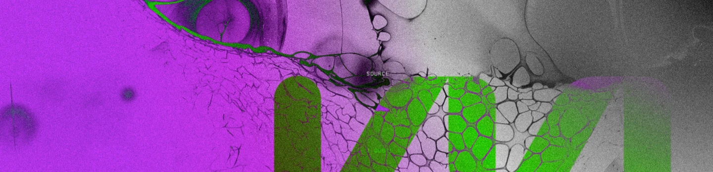


[ QUOTE ]
Chairman
Mark Fox
Mark Fox
MHA Nation
Tribal Chairman
Tribal Chairman
“Tribal cultures have always placed tremendous value on how the past has shaped the present. The natural world, both plants and animals have held cultural significance and heritage to tribes across the globe since the beginning of time... With Colossal, we now have the opportunity to bring conservation to the future by reaching into the past and marrying the worlds of conservation and cultural significance together through the de-extinction of species.”
+
+
SOURCE
+
+
Cas9
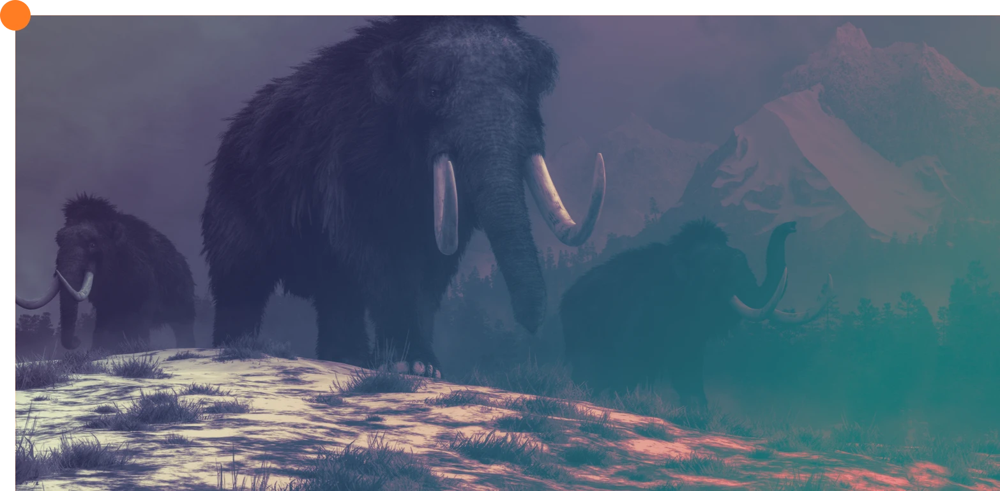
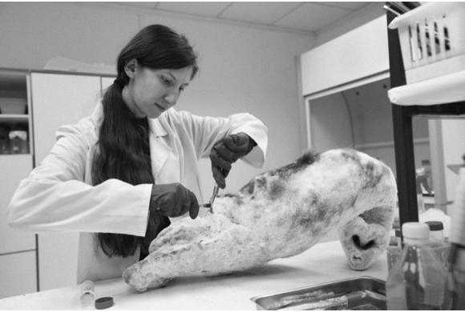
mission + goal
MODERN BIOLOGY
BUILT UPON THE PAST.
Through technological and engineering breakthroughs in biosciences and genetics, Colossal is accepting humanity’s duty to restore Earth to a healthier state, while also solving for the future economies and biological necessities of the human condition.
Colossal will revolutionize history and be the first company to use CRISPR technology successfully in the de-extinction of previously lost species. On the journey we will build radical new software tools and technologies to advance the science of genomics overall.
[ QUOTE ]
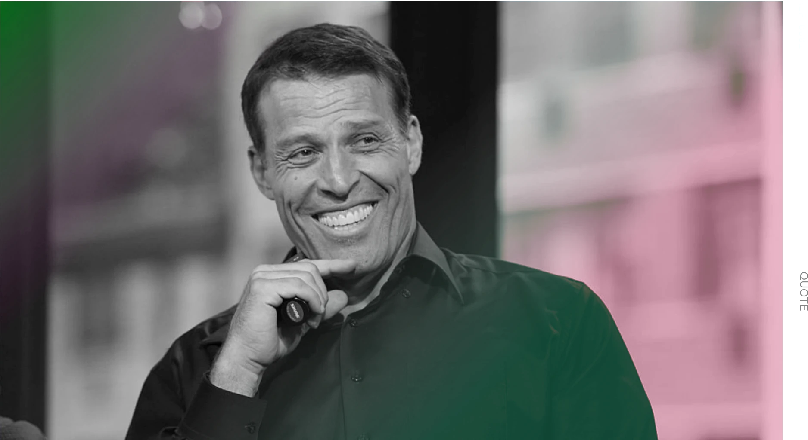
"I've followed the ground-breaking work of George Church for years. I have also invested in and coached Ben Lamm when he founded Hypergiant. These two are a powerhouse team who have the ability to completely shift our understanding of modern genetics while developing innovative technologies that not only help bring back lost species, but advance the entire industry. I am proud to be an investor in their journey."
World Famous Life-Coach, Author,
Investor and Entrepreneur
[ colossal investor ]
SECTION 05
core
values
COLOSSALLABS & SYSTEMS
Duty to Preserve & Protect a Pristine Nature
+
As grateful citizens of the universe, we recognize the value of habitable environments for our species and those around us. As tenants of Earth, currently the only livable planet in our solar system, it is not enough just to be grateful, but we must also be active in a role as custodians and defenders of the nature which sustains life.
RESPECT FOR ALL LIVING THINGS
+
Balance is not for us to determine. It has been refined for billions and billions of years by forces such as gravity, geology and evolution. Thus it is not our role to pick and choose the winners and losers. But merely to respect all living things - past and present.
Pushing the Humanistic & Economic Potential of Bioscience
+
Today, the woolly mammoth. But tomorrow, maybe the cure for blindness, eradication of tumors and elimination of disease. The potential of bioscience is almost unlimited, and we are at the forefront, pushing the boundaries.
Virtue & Moral Good
+
At Colossal we are driven by the forces of virtue and moral good - working for a healthier planet, a healthier human populace and a pursuit of that which we recognize as goodness, compassion and honest, pure science.

+
Colossal’s
Values &
Commitments
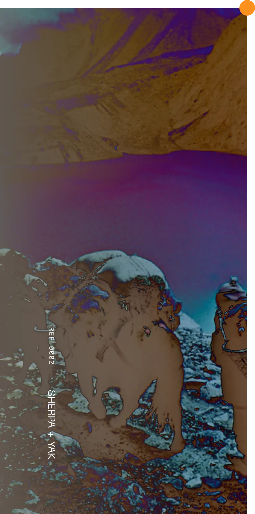
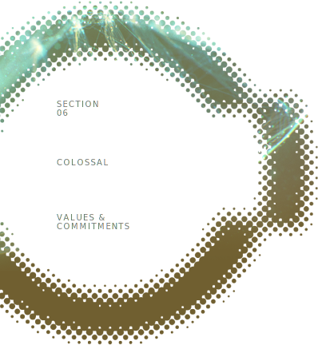
Colossal expands the boundaries of what is possible with CRISPR and other cutting edge biological engineering technologies, always with a commitment to responsible science and stewardship of our planet’s natural diversity. We are guided by these values:
[ Unbreakable PRINCIPLES ]
+
01
Thoughtful Innovation
+
- Horizon scanning
- Questioning traditional approaches
- Creative solutions
- Careful designs
02
Excellence & Integrity
+
- Rigorous methodology
- Unbiased analysis
- Careful risk-benefit analysis
- Transparency
03
Responsible Science
+
- End-to-end biosafety and biosecurity measures
- Integrated monitoring and mitigation tools
- Fair distribution of risks and benefits
04
Equity & Sustainability
+
- Ecosystem stability
- Economic viability
- Broad accessibility by design
- Intergenerational justice
05
Inclusiveness
+
- Community engagement
- Respect for cultural viewpoints
- Diverse workforce development
- Global viewpoint
[ QUOTE ]
"Healing our Earth's ecosystems is of critical planetary importance.
The overwhelming success of the human species has come at a profound price, the massive global loss of biodiversity and destruction of basic ecological services that have been tuned over millions of years to support life. Colossal is pioneering an approach to ecosystem restoration and bioscience innovation that can help reverse this trend, restoring some balance to the world."
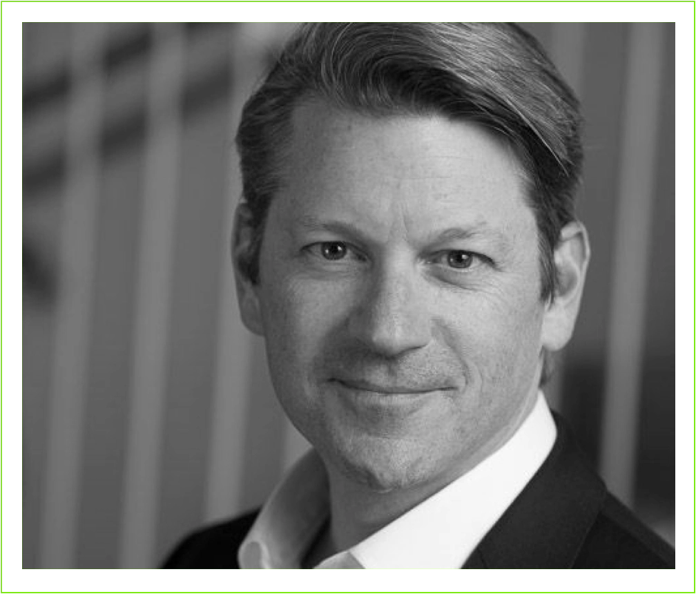
Managing Partner JAZZ Ventures, founder & CEO of NeuroInsights, best-selling author, founder of Neurotechnology Industry Organization, creator of Experiential Technology and NeuroGaming Conference and Expo
[ Colossal Investor ]
Company
leadership
+
It will be up to humans to reverse the harm caused by humans. Hence, our team is intentionally selected to accomplish exactly that - comprised of world-leaders in science and genetics to ecology and industry.
+
REF 0004

founders of colossal
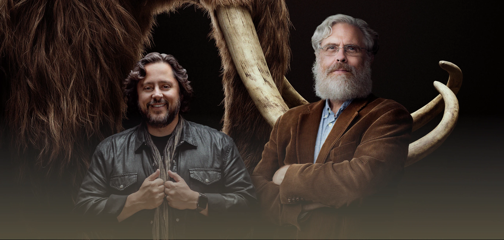
FOUNDER
ben lamm
+ BIO
Ben Lamm is the Co-Founder and CEO Of Colossal Biosciences, the world’s first de-extinction company. He is a serial technology entrepreneur driven to solve the most complex challenges facing our planet. For over two decades, Ben has built disruptive businesses that future-proof our world. In addition to leading and growing his own companies, he is passionate about emerging technology, science, space and climate change.
Prior to Colossal, Ben served as the founder and CEO to a number of companies, including Hypergiant, an enterprise AI software company focused on critical infrastructures, space, and defense acquired by Trive Capital; Conversable, the leading conversational intelligence platform that helps brands reach customers through automated experiences acquired by LivePerson; and Chaotic Moon, a global creative technology powerhouse acquired by Accenture. He was also the Co-founder of Team Chaos, a consumer gaming company acquired by Zynga.
Ben is a fellow and on the Board of Trustee at the Explorers Club, whose mission is to promote the scientific exploration of land, sea, air, and space by supporting research and education in the physical, natural, and biological sciences. He also serves as a Scientific Advisory Board member on the Planetary Society and sits on the Advisory Board for the Arch Mission.
FOUNDER
George Church, PH.D.
+ BIO
George Church, Ph.D. acts as the co-founder and lead genetics advisor for Colossal. He is a professor at Harvard and MIT, runs the Church lab at the Harvard Medical School, and is a Core Faculty member of the Wyss Institute at Harvard where he leads the Synthetic Biology Platform. Church is a recognized leader in genomics, having pioneered a number of advances and breakthroughs that have helped advance the entire field.
In 1984 with Wally Gilbert, Church developed the first direct genomic sequencing method and barcode-multiplexing tags. This led to automation and software used for the first cellular genome sequence (Helicobacter) in 1994, which evolved into ‘in-situ sequencing’ (1999) and ‘next-generation sequencing’ (2014).
Church then pioneered chip-based DNA libraries, genome editing, and stem cell engineering. He also pioneered new privacy, biosafety, human engineering, environmental, biosecurity, and bioethics strategies and training. Today, he and his group champion open-access human genome data.
For his achievements and direct contributions to genomics and the sciences as a whole, Church has received numerous awards. Some of his most prestigious recognitions include National Academy of Sciences, National Academy of Engineering, the Heptannual Bower Award, and Prize for Achievement in Science from the Franklin Institute.

CORE TEAM:
THE BEST AND THE BRIGHTEST
+
Colossal’s Solution:
EXECUtive Core
+
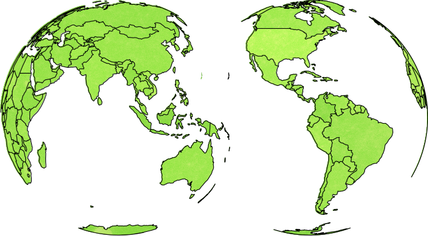
[ COLOSSAL CENTRAL LEADERSHIP ]
+

Alta Charo, J.D.
Head of Bioethics
Alta Charo is the Knowles Professor Emerita of Law & Bioethics at the University of Wisconsin, where for over 30 years she has taught classes on biotechnology policy, food and drug law, public health law and bioethics. Alta served as a David A. Hamburg Inaugural Fellow at the Nuclear Threat Initiative, working in its global biosecurity program. She is also an elected member of the American Academy of Arts and Sciences; the American Association for the Advancement of Science; and the National Academy of Medicine. She was a member of Pres. Clinton’s National Bioethics Advisory Commission, worked as a policy analyst at the congressional Office of Technology Assessment and the US Agency for International Development, and served as a senior policy advisor in the Office of the Commissioner at the FDA, focusing on regulatory approaches to emerging technologies. At the National Academies of Sciences, Engineering and Medicine she co-chaired the committees on guidelines for embryonic stem cell research (2005-2010) and governance of human genome editing (2015-2017), co-founded the forum on regenerative medicine, served on its committee on science technology and law, and now co-chairs its standing committee on “emerging science, technology and innovation.” She is also a member of the World Health Organization’s expert advisory committee on global governance of genome editing, and was a member of the organizing committee for the 2022 US-UK “third international summit on genome editing.”

Hon. Aurelia Skipwith, J.D.
Regulatory Affairs Lead
The Honorable Aurelia S. Giacometto is the General Counsel and co-founder of AVC Global. A premier logistics company that works with National governments to secure the entry and sale of pharmaceuticals into their countries. She recently served as CEO of the International Order of T. Roosevelt, a start-up not-for-profit conservation organization, where she was responsible for establishing their infrastructure and developing their programs that aligned with the mission to preserve Nature’s precious resources through conservation, education, and ingenuity through science and stewardship. Aurelia has over 15 years of experience in regulatory compliance in various fields of agriculture, environmental stewardship, and management of fish and wildlife populations. She worked as a biologist developing sustainable crops at Monsanto, and as a legal counsel at Alltech Inc., an all-natural livestock feed operation. In 2017, she was appointed by President Trump as Deputy Assistant Secretary in the Department of the Interior and 2019, she was confirmed by the U.S. Senate as the 22nd Director of the U.S. Fish and Wildlife Service, where she led the 8500-employee agency with over 850 million acres of land and water to revolutionize business operations, improve service and grant more access to the American people. Aurelia is passionate and committed to wildlife, the environment, science, and sustainable development. In her spare time, she works on various projects, including applying new digital technologies toward conserving plants and wildlife and operating a thriving real estate rental business in Missouri, Indiana, and South Dakota. She received her Bachelor’s degree from Howard University, Master’s degree from Purdue University and law degree from University of Kentucky’s College of Law. She serves on several boards, including Ramaco Resources, a publicly-traded metallurgical coal company, Steamboat Institute, Rubicon Institute, and Ducks Unlimited’s Conservation Program Committee. Aurelia enjoys the outdoors and you will usually find her outside fishing, hunting, or running. She holds a sub-3-hour marathon time.

Beth Shapiro, Ph.D.
Chief Science Officer
Beth Shapiro, D.Phil, is Colossal’s Chief Science Officer. Beth joined Colossal after more than two decades pioneering ancient DNA research in academic positions at Oxford University, Penn State University, and most recently the University of California Santa Cruz, where she was a Howard Hughes Medical Institute Investigator. Beth received a BS and MS in Ecology at the University of Georgia and a DPhil in Zoology at Oxford University, where she was a Rhodes Scholar. An elected member of the American Academy of Arts & Sciences, Beth is highly acclaimed for her research and popular science writing, and has been named a Packard Fellow, National Geographic Explorer, and MacArthur Fellow.

Sara Ord
Director of Biotechnology Innovation
Sara Ord is Director of Species Restoration at Colossal and is focused on advancing science and technology to change the way we protect endangered species. Sara received her Master’s degree in Chemical and Biomolecular Engineering from Johns Hopkins University where she focused on building integrated materials with chemical information processing mechanisms, inspired by biology. Previously, Sara was a researcher at Hypergiant, where she focused on advancements of chemical and molecular processes in space.
Sara has a Bachelor of Science from California State University, Fullerton where she majored in biological sciences, with a concentration in cellular and developmental biology. Her research has focused on fundamental questions in molecular evolution related to cellular adaptation and response to stress, where she co-authored two papers. Prior, Sara worked at St. David’s Hospital as a pathologist assistant where she gained hands-on experience in the field of histology.
Sara has a passion for science, environmental conservation and the representation of ideas encompassed in these fields. Her work at Colossal aims at the advancement of these ideas through research.

Anna Keyte, Ph.D.
Species Director
Anna Keyte, Ph.D. is a Species Director specializing in Avian Genome Engineering. Previously she was a Research Specialist with the Howard Hughes Medical Institute at The Rockefeller University leading a team investigating avian transgenesis and biotechnology for bird conservation. Anna has over a decade of research experience in avian developmental biology, as well as 6+ years experience in tool building for avian conservation. She received her Ph.D. in Developmental Biology from Duke University studying limb development and somitogenesis in the gray short-tailed opossum (Monodelphis domestica), and her BS in Mathematics and Zoology from Iowa State University. At Colossal she is working to develop methods to culture and genetically engineer avian primordial germ cells, as well as build biotechnology tools for avian conservation and de-extinction.

Michael Abrams, Ph.D.
Species Director
Michael received his Ph.D. in Molecular Microbiology from the University of Texas Southwestern Medical Center in 2020, where he studied mechanisms by which interferon-mediated regulation of cholesterol protects against bacterial and viral pathogens. His postdoctoral work focused on mechanisms of neurodegeneration, including tau aggregation. Michael received a B.S. in Molecular Biology from San Jose State University, during which he conducted research in the field of metagenomics, with a particular focus on antibiotic resistance and methods to culture uncultivable bacteria.
Michael has worked with CRISPR-based gene editing systems for over 12 years, and has expertise in molecular biology, cell biology, and mouse models. At Colossal, Michael develops and leads strategies to enable efficient editing in elephant cells and animal models, while working further to develop an understanding of genotype to phenotype relationships.
Austin Bow, Ph.D.
Species Director
As an associate director of the Mammoth Team, Dr. Bow leads efforts to derive, biobank, characterize, and modify cell lines from elephants and other model / non-model organisms. His graduate studies and post-doctoral work focused on the derivation and characterization of multipotent stem cells from multiple species and their application on novel and commercial 3D scaffolds for bone tissue engineering. Having joined Colossal Biosciences at an early stage he has collaborated closely with colleagues on core conservation goals for the company, including the publication of a high-quality reference genome for Loxodonta Africana on the NCBI database. He has a tremendous respect for nature and is passionate about the use of cutting edge technologies to further conservation efforts alongside Colossal’s de-extinction objectives.

Trevor Snyder, Ph.D.
Vice President, Artificial Womb Technology
Trevor Snyder, Ph.D. is the Vice President, Artificial Womb Technology. Previously, he was the Vice President, Research & Product Innovation at CorWave, SA in Paris, France leading the research and development of novel circulatory support devices to treat heart failure. Dr. Snyder has over 20 years of experience in the design, development, testing, and clinical use of life-supporting medical devices including heart pumps, artificial lungs, dialysis machines, and bioartificial organs. His pre-clinical and clinical research focused on ensuring adequate perfusion of large animals or humans, including intensive patient monitoring of metabolism, inflammation, coagulation, and respiration. He has served as the PI on four clinical trials, has authored over 25 peer-reviewed manuscripts, and is an inventor on 5 patents with several applications pending. Dr. Snyder has also conducted research investigating cardiac stem cell biology, microfluidics, and xenotransplantation.
He received his Ph.D. in Bioengineering from the University of Pittsburgh studying the pre-clinical evaluation of thrombosis and hemocompatibility of medical devices in large animal models, and his B.S.E. in Biomedical Engineering from Tulane University.

Michael Dougherty
Executive Vice President - Creative Entertainment
Michael Dougherty is Executive Vice President, Creative Entertainment. He is a writer, director, and producer who has worked with some of the world’s most iconic characters, including the X-Men, Superman, Godzilla, and King Kong. Beginning his career as an animator for MTV and Nickelodeon, he then co-wrote the blockbusters X-Men 2 (2003) and Superman Returns (2006) before making his directorial debut with the classic horror comedy, Trick ‘r Treat (2009). Dougherty later set his sights on Christmas, which resulted in Krampus (2015), a holiday horror comedy starring Toni Collette, Adam Scott, David Koechner, and Allison Tolman. Much like Trick ‘r Treat, Krampus has become an annual holiday classic. More recently, Dougherty co-wrote and directed the blockbuster Godzilla: King of the Monsters (2019) starring Millie Bobby Brown, Vera Farmiga, and Ken Watanabe, and co-wrote the story for its sequel, Godzilla vs. Kong (2021). He holds a BFA from New York University Tisch School of the Arts.

Brian Beard, J.D.
Co-Founder & Chief Legal Officer
Brian Beard is the Chief Legal Officer for Colossal Biosciences Inc. where he helps facilitate strategic company growth and execute on the long-term vision of the company with speed and precision including the various partnerships and licensing.
Over the span of his 35+ year legal career, including 15 years as managing partner of Wilson Sonsini Goodrich Rosati, Brian has served as outside corporate counsel to public and private companies, advising them on a wide range of significant corporate transactions, including mergers and acquisitions, initial public offerings, and private equity and venture capital financings. He has successfully orchestrated and closed thousands of technology transactions as well as hundreds of public offerings for companies and underwriters.
In addition to his legal role, Brian has advised a number of management teams and Boards of Directors on their corporate strategy, with a focus on corporate governance issues.
Brandi Cantarel, Ph.D.
Director Of Bioinformatics
Dr. Brandi Cantarel is a leader in bioinformatics. For over 15 years, she has been involved in projects that utilize sequence technology to understand human health, often on the forefront of an emerging field or technology. She leads bioinformatics development of next-generation sequence (NGS) data, including genomics, transcriptomics and metagenomics in rare/complex genetic diseases, immunology, infectious disease and cancer. She has applied precision medicine research in a CAP/CLIA setting, with the development of tools for tumor mutational profiling. In 2020, Brandi was named a Highly Cited Researcher by Web of Science. Prior, Brandi was a faculty member at the UT Southwestern Medical Center, Department of Bioinformatics and at the University of Maryland, Institute for Genome Sciences.
Brandi has a PhD from the University of Virginia, Department of Biochemistry and Molecular Genetics and a BS in Biochemistry from the University of Maryland, Baltimore County.
Sam Singer, CFA
Chief Financial Officer
Sam Singer is the CFO of Colossal Bioscience with extensive experience as a finance executive and investor in the biotech industry. Before joining Colossal, Sam was the Chief Financial Officer of Totus Medicines, a small molecule oncology focused biotechnology company where he was primarily responsible for growing the finance group, investor outreach and strategic messaging, including financial planning. Prior to Totus, Sam was an investor in the biotech sector leading analysis and valuation with a focus on gene editing companies.
Kent Wakeford, J.D.
Special Executive Advisor To The CEO
Kent Wakeford is a leader in the technology industry with over twenty years of experience in digital consumer products and data measurement. Kent serves on the board of Skillz [NYSE SKLZ] which is a leading mobile platform with over 100 million users around the world.
Kent is the co-founder and Vice Chairman of Gen.G Esports which, according to Forbes, is the one most valuable esports team organization in the world.
Prior, Kent was Chief Operating Officer of Kabam, where he helped grow Kabam to a globally diverse company with over 1,000 employees in 7 countries and games that were played by over 500 million people around the world. Kent helped lead the sale of Kabam to Netmarble Games for $800M. Prior to Kabam, Kent was the co-founder and President of Integral Ad Science, the global market leader in digital ad measurement and verification which was acquired by Vista Equity Partners for $850M. Kent is a co- inventor on over 75 patents ranging from streaming technology, virtual reality, location-based mobile applications to video game design. Kent is a prolific industry spokesperson featured in Bloomberg, CNBC, The Wall Street Journal, and Los Angeles Times.
Sarah Grant
Chief Of Staff
Sarah Grant is a graduate of the University of Texas at Austin. After starting her career in financial services, she joined Chaotic Moon, the leading creative technology studio, which was acquired by Accenture. Shortly after the acquisition, Sarah had a brief stint in public relations but ultimately found herself back in the tech scene at Conversable, the largest AI-powered conversational platform which was later acquired by LivePerson. She was Chief of Staff at Hypergiant, an enterprise AI software company focused on critical infrastructures, space, and defense and remains a Partner. As Chief of Staff at Colossal, she is involved with every aspect of the company as she works side-by-side with the Founder and CEO. She is responsible for managing information flow while prioritizing the CEOs time and appointments, drafting communication, and acts as a sounding board. She handles special projects, press relations, financial transactions and organizes critical issues for the CEO to facilitate efficient decision making and effective leadership. Sarah has supported executives across six companies, eight boards, and two family offices.

Matt James
Chief Animal Officer / Executive Director of the Colossal Foundation
Matt James is a leader in exotic animal care with more than fifteen years of experience in animal care and welfare. He joined Colossal in 2022 as Chief Animal Officer where he leads the animal operations team to ensure the health, safety, and well-being of Colossal’s animals. Matt develops and implements effective strategies for animal welfare, conservation, and education.
In October 2024, Matt was named Executive Director of the newly established Colossal Foundation, the non-profit arm of Colossal dedicated to supporting the use of cutting-edge technologies to conservation efforts globally to help prevent extinction of keystone species. Through the foundation, Colossal provides support to empower a large selection of partners in the field to reverse the extinction crisis.
Matt previously worked as the Senior Director of Animal Care for large zoological institutions such as the Dallas Zoo and Zoo Miami where he had the opportunity to manage over 7,000 animals representing more than 500 species, while also maintaining their accreditation standards with the Association of Zoos and Aquariums (AZA). He has managed, cared for, bred, and translocated a large variety of animals including elephants, rhinos, and other mega-vertebrates. Understanding the necessity for collaboration and perpetuating his passion for conservation, Matt previously held several positions within the AZA organization such as serving on the Taxon Advisory Groups for Elephants, Rhinos, and Antelope & Giraffid, and managed the Species Survival Plans for Red River Hogs, Yellow-backed Duikers, and Giraffe.In addition to acting as an accreditation inspector.
Matt has a Bachelors of Science from Doane University where he majored in Biology and Chemistry as well as an MBA from the Muma College of Business at the University of South Florida. He is based in Dallas, Texas.
Chris Klee
Executive Vice President, Marketing & Design
Chris Klee, widely known as ‘Klee,’ is an award-winning designer and visionary. As a versatile leader, Klee seamlessly navigates between guiding teams and actively engaging in hands-on work, skillfully merging strategy and design to deliver unparalleled experiences.
As the Executive Vice President of Design at Colossal, Klee helps manage the brand across physical and digital experiences. His collaborative efforts with the marketing team showcase Colossal’s groundbreaking de-extinction process to the world. In his previous role as Chief Design Officer at Hypergiant, Klee led the creation and management of product teams, delivering cutting-edge AI software solutions to the Space, Defense, and Critical Infrastructure sectors and the successful acquisition of Hypergiant by Private Equity firm, Trive Capital. Klee’s illustrious career spans diverse industries, including defense, transportation & logistics, energy, oil & gas, finance, aviation, hospitality, and healthcare.

Jillian McCall
Marketing Director
Jillian McCall is an award-winning marketing professional with over ten years of experience in developing innovative strategies and multi-platform B2C campaigns for Fortune 500 brands within entertainment, technology, fashion, and beauty industries. Working with major film studios and OTT streaming services, she has delivered 100+ integrated advertising campaigns and product launches for movies, television series, entertainment brands and franchises.
Prior to joining Colossal Biosciences, she most recently served as Director of Accounts at Warner Bros. Discovery, where she led audience-driven social/digital media programs and monetization strategies to support multi-million dollar revenue targets for global social teams at Warner Bros., HBO/HBO Max, and other Otter Media channels.

Amanda Bastawros
Head of HR
Amanda Bastawros is the VP, Head of Human Resources, and will be implementing the HR strategy at Colossal to support the dynamic culture and develop scalable processes as the company grows. She graduated from the University of Miami and has over 10 years of experience in Human Resources among various industries. In her previous roles as an HR leader she implemented several initiatives to increase employee engagement and provided performance management guidance for employees and management.

Andrew Busey
Chief Product Officer
Over the past 25 years, Andrew Busey has pioneered some of the internet industry’s most important technologies – including work on Mosaic, the first web browser (now part of Microsoft Internet Explorer); creating iChat, the first web based chat system and one of the first instant messaging applications; building WebCenter, the first web-based customer service technology (now part of Avaya); creating a new class of asynchronous games (Challenge Games, acquired by Zynga); and innovating in conversational commerce (Conversable, acquired by LivePerson). He is the primary inventor on twenty-nine patents.
Andrew is an active angel investor in companies such as Aceable, Cratejoy, FlashParking, ZenBusiness, and Waterloo Water. He is the author of Accidental Gods, a novel about a group of scientists who simulate a universe where life develops, and Secrets of the MUD Wizards, the first book about developing multiplayer games.
He has a degree in computer science from Duke University and an MBA from The Wharton School at the University of Pennsylvania.
GREATNESS IS
IN OUR DNA
+
company
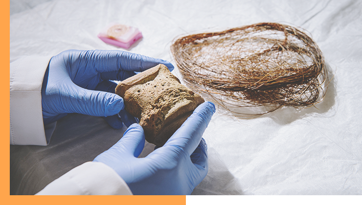
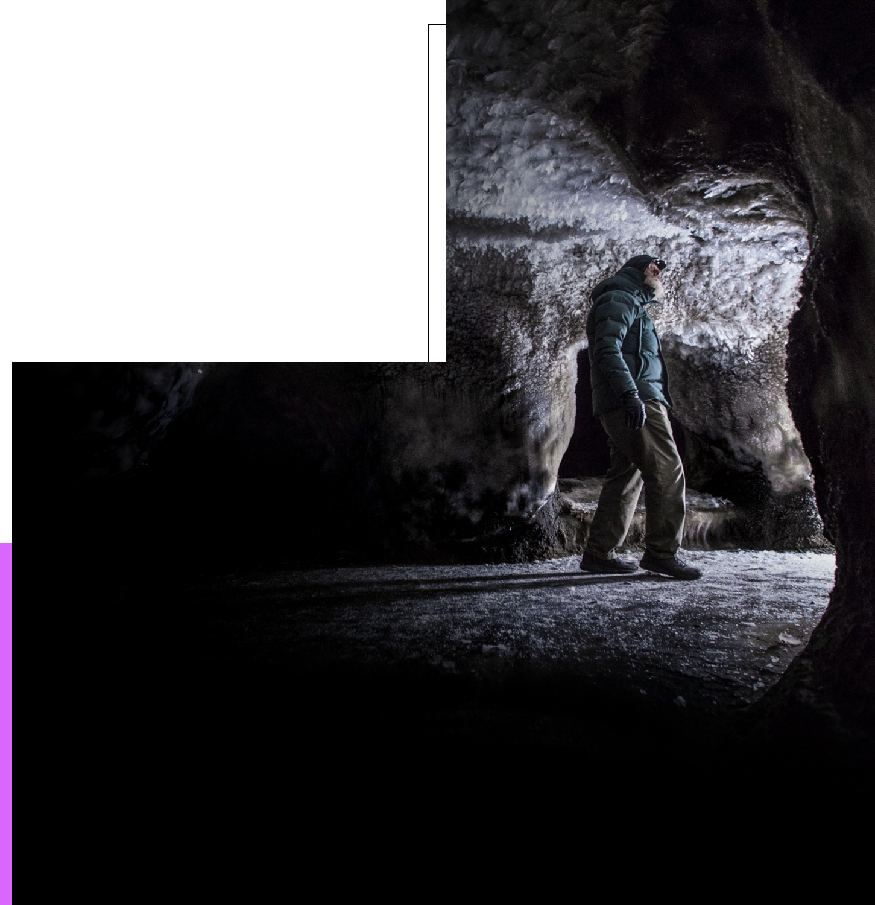
+
Dr. George ChuRCH
Observing ancient ice structures along the mammoth steppe in Cherskiy-Siberia, Russia.
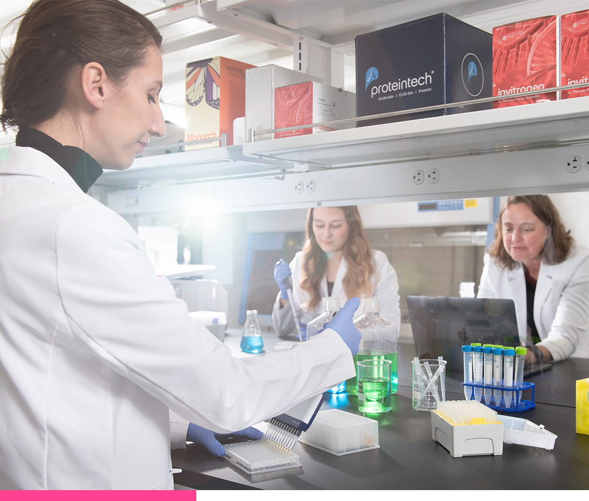
Leadership
SCIENTIFIC
ADVISORY BOARD
+
Section 09

At Colossal we're bringing together the greatest minds and leaders in technology, translational medicine, chemical engineering, biotechnology, molecular genetics, and software along with ground breaking entrepreneurs to help guide us on our path. Our team includes practicing physicians, researchers, authors, inventors, professors, and winners of the Anitschkow Prize, National Medal of Technology and Innovation, Breakthrough Prize in Life Sciences and the Harvey Prize.
Paul Scofield, Ph.D.
Biography
Paul Scofield is the Curator of Natural History at Canterbury Museum and an Adjunct Professor in the Department of Earth and Environment at the University of Canterbury. With over 30 years of experience in conservation and avian palaeobiology, his work spans New Zealand and the Sub-Antarctic but he has also worked throughout the in the Arctic, central Pacific and Caribbean. Paul is particularly fascinated by the intersection of biology, genomics, and palaeogeography. He has described more than 30 fossil species, co-authored significant works on the biology of moa, and authored two best-selling books on identifying New Zealand’s birds.
Leopold Eckhart, Ph.D.

Biography
Dr. Leopold Eckhart is Associate Professor in the Department of Dermatology at the Medical University of Vienna, Austria. His research is focused on the molecular architecture and evolution of the skin and its appendages in vertebrates. Dr. Eckhart’s studies have revealed mechanisms by which the skin of reptiles, birds and mammals forms a barrier against a dry environment to facilitate life on land. His team has defined and characterized catalogs of skin barrier genes in all major phylogenetic
groups of terrestrial vertebrates. The identification and comparative analysis of protein components of hair, feathers, claws, and scales has led to a comprehensive model for the evolutionary diversification of the skin in vertebrates. Dr. Eckhart’s research group has found a genetic program that controls skin appendages in a wide range of species ranging from clawed frogs to humans. The results of these studies have implications for basic skin biology and dermatology. Dr. Eckhart’s research has been funded through competitive grants from the Austrian Science Fund.
Alta Charo, J.D.
Biography
Alta Charo is the Knowles Professor Emerita of Law & Bioethics at the University of Wisconsin, where for over 30 years she has taught classes on biotechnology policy, food and drug law, public health law and bioethics. Alta served as a David A. Hamburg Inaugural Fellow at the Nuclear Threat Initiative, working in its global biosecurity program. She is also an elected member of the American Academy of Arts and Sciences; the American Association for the Advancement of Science; and the National Academy of Medicine. She was a member of Pres. Clinton’s National Bioethics Advisory Commission, worked as a policy analyst at the congressional Office of Technology Assessment and the US Agency for International Development, and served as a senior policy advisor in the Office of the Commissioner at the FDA, focusing on regulatory approaches to emerging technologies. At the National Academies of Sciences, Engineering and Medicine she co-chaired the committees on guidelines for embryonic stem cell research (2005-2010) and governance of human genome editing (2015-2017), co-founded the forum on regenerative medicine, served on its committee on science technology and law, and now co-chairs its standing committee on “emerging science, technology and innovation.” She is also a member of the World Health Organization’s expert advisory committee on global governance of genome editing, and was a member of the organizing committee for the 2022 US-UK “third international summit on genome editing.”
Karl R. Koehler, Ph.D.

Biography
Dr. Karl Koehler is an Assistant Professor of Otolaryngology-Head and Neck Surgery at Harvard Medical School and Boston Children’s Hospital. He also serves as a Principal Investigator in the FM Kirby Center for Neurobiology. After earning his PhD in Medical Neuroscience from Indiana University School of Medicine in 2014, he quickly established his laboratory there, before transitioning to Boston Children’s Hospital in 2019. Dr. Koehler’s research is dedicated to understanding how embryonic cells coalesce to shape the organs responsible for our auditory, vestibular, visual, tactile, and nociceptive senses. A cornerstone of his work is the development of organoid models, which are cell culture representations of the human embryo formed using stem cells. Dr. Koehler’s team pioneered the creation of the inner ear organoid; a significant advancement now being leveraged to progress gene therapies for disorders affecting hearing and balance. Another noteworthy achievement of his team came in 2020 when they produced human skin organoids capable of growing hair and sensory nerves. This innovation holds promise in fields ranging from skin disease research and advanced wound treatment to investigations into the evolutionary trajectory of skin and hair attributes across different species. His work has been funded through numerous grants from the Department of Defense, National Institute of Health, the National Science Foundation, and philanthropic gifts.
Hendrik Poinar, Ph.D.

Biography
Hendrik Poinar is an evolutionary geneticist specializing in ancient DNA. Poinar first became known for extracting DNA sequences from ground sloth coprolites. He is currently director of the Ancient DNA Centre at McMaster University in Hamilton, Ontario. He is interested in the preservation and degradation of organic residues in the fossil record. He devises novel ways to extract these molecules and uses any remaining sequence information to address questions about the past. Recently, he has tried to identify the aetiological agent(s) of past pandemics (Black Death, Plague of Justinian), and to illuminate the evolutionary dynamics of these bacteria (and viruses) during both epidemic and non-epidemic cycles, as well as their reservoirs (hosts and environmental), and the underlying changes in both hosts and pathogen(s) that may explain their increased virulence and, in some cases, subsequent attenuation.
Joe Tector, MD, PhD, FACS
Biography
More than 30 years of experience in transplant surgery and the pioneering visionary whose work the modern xeno-field is built upon. He is currently Director of the Xenotransplant Institute; Surgical Director, Small Bowel and Multivisceral Transplant Program, University of Miami Medical School. Dr. Tector received his training from McGill University, University of Miami, and St Louis University School of Medicine.
Florian Hollfelder, Ph.D.

Biography
Florian Hollfelder was educated at the Technical University of Berlin (Diplom-Chemiker) and Cambridge University (MPhil). After a formative stay at Stanford (with Dan Herschlag) on free-energy relationships in enzymes) he joined Tony Kirby’s group at the Chemistry Department of Cambridge University working on enzyme models and physical-organic chemistry. During his PhD he also collaborated with Dan Tawfik (on the mechanism and evaluation of model enzymes such as catalytic antibodies). His postdoctoral work at Harvard Medical School (with Chris T. Walsh) was concerned with the biosynthesis and action of the natural antibiotic microcin B17.
In 2001 he returned to Cambridge to start his own research group in the Biochemistry Department, where he is Professor in Chemical and Synthetic Biology. The group’s research centres around quantitative and mechanistic questions at the chemistry/biology interface, involving low- and high-throughput approaches. Mechanistic work focuses on enzymatic bioreactions and their organic chemical counterparts, on strategies for finding and creating enzymes with novel reactions and on the pathways by which these can be enhanced by directed evolution. Most recently this approach has been extended to mechanisms of cellular development and embryology. A key technology under development in the group are ultrahigh throughput approaches for directed evolution, cell development in 3D and single cell transcriptomics.
Florian has held ERC Advanced and Starting Grants and coordinated several EU-funded trans-national collaborative initiatives, e.g. the H2020 research training networks MMBio (‘Molecular Tools for Nucleic Acid Manipulation for Biological Intervention‘) and ES-Cat (‘Directed Protein Evolution for Synthetic Biology and Biocatalysis’), ENDIRPRO & ENEFP on directed evolution of functional proteins, ProSA on protein-protein interactions and PhosChemRec on the chemical biology of phosphates. He is coordinator of the BBSRC sLOLA grant “Novel Plastizymes”, member of the EU Horizon Europe projects “BlueTools “and “BlueRemediomics” (on metagenomic exploration of marine biospheres) and co-founder of the companies DropTech and Evoralis. Florian is a Staff Fellow at Trinity Hall, where he acted as Tutor, Director of Studies and Graduate Mentor.
Jun Wu, Ph.D.
Biography
Dr. Jun Wu is an associate professor in the department of molecular biology at UT southwestern medical center. Dr. Wu’s work has contributed to the development of novel culture systems and methods that enable the generation of new stem cells for basic and translational studies. Dr. Wu has expanded the spectrum of pluripotent states by capturing mouse pluripotent stem cells (PSCs) with distinct molecular and phenotypic features from different developmental stages. And some of these culture conditions developed in mice enabled the generation of PSCs from many other mammalian species, including humans, non-human primates, and ungulates. In addition, Dr. Wu has developed efficient and versatile blastocyst complementation methods for in vivo generation of functional tissues and organs from cultured PSCs, and several stem cell derived embryo models. Dr. Wu has received several awards including UT southwestern endowed scholar (2017), CPRIT scholar (2017), NYSCF-Robertson Stem Cell Investigator award (2022), and the ISSCR Outstanding Young Investigator Award (2024).
Julian P. Hume, Ph.D.
Biography
Julian Hume established himself as a self-taught artist specialising in reconstructing extinct species before undertaking a PhD in island bird palaeontology at the Natural History Museum, London. This provided an opportunity to not only discover extinct species and scientifically describe them but also artistically reconstruct them from their fossil remains. He has travelled around the world to work on fossil sites and has published many peer-reviewed papers and several books on the subject.
Elinor Karlsson, Ph.D.

Biography
Elinor Karlsson, PhD, is associate professor in Bioinformatics and Integrative Biology at the UMass Chan Medical School, and director of Vertebrate Genomics at the Broad Institute of MIT and Harvard. Her research combines new technology, community science and genomics to investigate diseases and discover the origins of exceptional mammalian traits. Dr. Karlsson’s research includes the Zoonomia project, an international effort to compare the genomes of over 240 mammals (from the African Yellow-spotted Rock Hyrax to the Woodland Dormouse), to identify segments of DNA that are important for survival and health. Dr. Karlsson has a special interest in dog and wolf genetics, and her international Darwin’s Ark project invites all dog owners to enroll their dogs in an open data research project exploring the genetic basis of behavior, as well as diseases such as cancer. Elinor received her B.A. in biochemistry/cell biology and her B.F.A. (Bachelor of Fine Arts) from Rice University, and earned her Ph.D. in bioinformatics from Boston University. She was a postdoctoral fellow with Pardis Sabeti at Harvard University before starting her research group at UMass Chan in 2014.
Robin Ganzert, Ph.D.
Biography
Robin Ganzert, Ph.D., serves as president and CEO of American Humane, the country’s first national humane organization and the first to serve animals, whenever and wherever they are in need of rescue, shelter or protection. She is the executive producer of the full-length, award-winning documentary, Escape from Extinction, narrated by Dame Helen Mirren, as well as the executive producer of the annual American Humane Hero Dog Awards which aired for ten years on Hallmark Channel and most recently aired on A&E and fyi networks. Additionally, she is the author of The Humane Table: Cooking with Compassion, Mission Metamorphosis and Animal Stars. Her next book, Escape from Extinction, is set to come out in 2025. Dr. Ganzert serves on the board of Loro Parque Foundation, the Lois Pope LIFE Foundation and is a member of The Explorers Club, the Palm Beach Chamber of Commerce Trustee Program, and the International Women’s Forum. She has been awarded the prestigious Gorilla Prize by world-renowned zoological organization Loro Parque for her efforts in conservation.
Dr. Ganzert is frequently highlighted in prominent national news and media platforms as an authoritative advocate for animals. In the recent season, she made appearances on shows like Good Morning America, Fox & Friends, Fox News Saturday Night, and America’s Newsroom, among others. During her tenure at American Humane, she has been a guest on broadcast outlets such as the TODAY Show, MSNBC, World News Tonight, CNN, and Fox Business News, to name a few. Additionally, her insights have been featured in major newspapers, including The Washington Post, The New York Times, The Wall Street Journal, USA Today, Chicago Tribune, Los Angeles Times, and the Boston Globe.
Under her leadership, American Humane continues to earn recognition for its commitment to transparency, accountability, efficiency, and financial responsibility. Thanks to this dedication, American Humane is a top- rated charity having earned, for six years, Charity Navigator’s “Four-Star” rating; the “Seal of Excellence” from Independent Charities of America – awarded to fewer than three percent of charities nationwide; an “A” rating from Great Nonprofits; and is one of the few charities that meet all of the Better Business Bureau’s Wise Giving Alliance 20 Standards for charity accountability.
Since her appointment in 2010, Dr. Ganzert has spearheaded unprecedented growth and transformational change at the historic 145-year-old nonprofit, which has reemerged as the most effective humane organization, directly impacting the lives of more animals around the world than any other organization through innovative, life-changing and life-saving programs that set the gold standard in animal welfare and protection. Dr. Ganzert has dramatically expanded the scope and scale of the organization’s programs globally with a presence in 40 countries making American Humane the largest certifier of animal welfare in the world. In addition to this growth she has provided oversight for iconic humane programs such as No Animals Were Harmed®, protecting animals in film and entertainment; and, American Humane Certified®, helping to ensure humane treatment of animals in agriculture. She launched a first-of-its-kind humane certification in global conservation for animals in zoos and aquariums and an innovative humane certification effort for the airline industry to help improve the safety and protection of companion animals in transportation. Most recently, Dr. Ganzert launched a new Humane Certified Pet Provider program focused on assessing the condition, well-being and welfare of small mammals, birds, reptiles, amphibians, invertebrates and aquatic life at pet provider locations and animal suppliers. Dr. Ganzert is also responsible for the creation of American Humane’s famed Pups4PatriotsTM program that provides lifesaving service dogs for wounded warriors facing Post Traumatic Stress and Traumatic Brain Injury.
American Humane is now the largest certifier of animal welfare in the world, overseeing the care of more than 1 billion animals annually. This represents more than a 2,000 percent increase during her tenure in the number of animals protected every year.
Additional programmatic efforts include leading American Humane’s emergency rescue missions to help the animal victims of catastrophic disasters from Superstorm Sandy to Hurricanes Harvey and Ian; creating a groundbreaking clinical trial documenting the efficacy of therapy dogs in helping childhood cancer patients; founding the bipartisan Congressional Caucus for the Humane Bond; and, securing a major legislative victory with the passage of language in the National Defense Authorization Act mandating that all American military working dogs must retire on U.S. soil.
Dr. Ganzert holds a B.S. in Business & Accounting, an MBA and a Ph.D. She previously served as the vice chair of the governing board of the National ALS Association. Prior to her appointment at American Humane, Dr. Ganzert directed philanthropic services and charitable giving at The Pew Charitable Trusts and Wachovia Wealth Management.
Dr. Ganzert resides in South Florida and Washington D.C. with her beloved cats and dogs and enjoys spending time with her three wonderful children.
Carlos Bustamante, Ph.D.

Biography
Carlos D. Bustamante is an American population geneticist, academic, and entrepreneur. He is currently chief executive officer of Galatea Bio, Inc., a company he founded when a professor at Stanford University School of Medicine.
Academic Appointments:
Member, Bio-X
Member, Cardiovascular Institute
Faculty Affiliate, Institute for Human-Centered Artificial Intelligence (HAI)
Member, Maternal & Child Health Research Institute (MCHRI)
Member, Institute for Computational and Mathematical Engineering (ICME)
Member, Stanford Cancer Institute
Andrew Pask, Ph.D.
Biography
Andrew Pask is a Professor in the School of BioSciences at the University of Melbourne. He completed his PhD in 1999 at LaTrobe university and moved for a postdoc to the University of Melbourne. In 2001 he was awarded an NHMRC CJ Martin fellowship, on which he spent 2 years at the MD Anderson Cancer Center in Houston Texas USA and 2 years at the University of Melbourne. He then received an NHMRC RD Wright fellowship in 2005 to continue his work in reproductive biology. In 2008 he took an appointment as Associate Professor at The University of Connecticut where he stayed until 2013. He was then recruited back to the University of Melbourne as a Research Accelerator Program Fellow. In 2014 he received an ARC Future Fellowship. In 2018 he was promoted to Professor at the University of Melbourne and he is now the Domain Leader for Molecular Cellular and Developmental Biology within the School of BioSciences. Prof Pask heads up the TIGRR and Evo-Devo-Repro research laboratories which explore many aspects of mammalian evolution, development and reproductive technologies.
Bridgett vonHoldt, Ph.D.
Biography
Bridgett vonHoldt is an evolutionary biologist who specializes in genomic analysis of North American canines. She is an Associate Professor of Ecology and Evolutionary Biology at Princeton University and champions the value of mixed genetic ancestry for endangered species conservation. Her research focuses on evolutionary genomics of admixed canine species across hybrid zones, with her researching having significant conservation applications for endangered species like the red wolf. Bridgett is the founder and director of the North American Canine Ancestry Project, as well as a co-founder and lead geneticist for the Gulf Coast Canine Project.
Austin Gallagher, Ph.D.
Biography
Dr. Austin Gallagher is a globally-activated marine biologist and social entrepreneur, best known for his research on megafauna, particularly sharks. He is the founder of The Beneath the Waves Group, which controls 6 companies engaged in cutting-edge marine research and exploration, technology, climate solutions, and carbon finance. He serves as CEO to core asset Beneath the Waves Inc., a next-generation NGO research institute engaged in marine projects worldwide, with a focus on North America and The Caribbean. Gallagher’s approach combines research, private sector collaboration, local engagement, and media – to create effective partnerships.
Dr. Gallagher has worked diligently studying and advocating for highly migratory species and their habitats around the world, directly supporting the protection of species and hundreds of thousands of square kilometers of ocean. He has served as the lead scientist on 50+ global scientific expeditions across 6 continents, and is broadly trained with expertise spanning large animal tracking, behavioral ecology, physiology, genetics, plant biology, and socioeconomics. He has published over 100 scientific papers, spanning research on the migrations of ocean giants, blue carbon, deep-sea exploration, and marine policy, and sits on the Editorial Board of Endangered Species Research.
He has forged dozens of firsts in the marine industry, ranging from the identification of new species and geographic records, to implementing new technologies to accelerate conservation solutions. In 2020, he partnered with wild tiger sharks to discover the world’s largest seagrass meadow, an area over 93,000 sq. km representing the ocean’s largest carbon sink, a discovery valued at over $0.4T. This discovery paved the way for his founding of Blueprint, a company focused on providing governments and corporations an end-to-end solution for blue carbon project management – from science to credits.
Dr. Gallagher is regularly consulted by US Congress, international governments, and he has briefed and collaborated with over 10 Heads of State to prompt and develop legislation and policies to protect threatened ocean habitat, species, and the communities that depend on them. He is a National Geographic Explorer, Fellow of the Explorer’s Club, Fulbright Scholar, former Forbes 30 Under 30 Winner, and is an Adjunct Professor at both The University of Exeter and Northeastern University.
Kenneth Lacovara, Ph.D.

Biography
Dr. Kenneth Lacovara has unearthed some of the largest dinosaurs ever to walk the earth, including the massive 65-ton Dreadnoughtus, which appeared in the recent film Jurassic World: Dominion. He is a recipient of The Explorers Club Medal, the club’s highest honor, previously awarded to pioneers such as Sir Edmund Hillary, Jane Goodall, and Neil Armstrong. His TED talk has been viewed by over four million people, and his book, Why Dinosaurs Matter, published by Simon & Schuster, is a winner of the Nautilus Book Prize. Lacovara’s discoveries have landed him three times in Discover magazine’s 100 Top Science Stories of the Year, and he has appeared in 17 television documentaries. Currently, he is researching the extinction of the dinosaurs. He is the founding dean of the School of Earth & Environment at Rowan University, and is executive director of the Edelman Fossil Park & Museum, where he and his team are building a $85M museum designed to connect people to deep time, the contingencies of natural history, and the fragility of our planet.
Tomas Marques-Bonet, Ph.D.
Biography
Tomas Marques-Bonet is an ICREA and Full Professor of Genetics at the University of Pompeu Fabra in Spain. From 2016 to 2020, Tomas served as the director of the Institute of Evolutionary Biology (UPF-CSIC). At the heart of his research lies a passion for understanding human and non-human primate evolution combining different areas of conservation, evolutionary and comparative genomics and biomedicine. His lab is investigating genomes and genomic variation in living primates and other mammals, including extinct species. Furthermore, Tomas and his team explore the evolution of gene regulation through comparative genomics. He serves as the coordinator of research at the Barcelona Zoo and is also the director of the Cryozoo, an essential infrastructure within the Barcelona Zoo Foundation. The Cryozoo’s mission is to create and preserve cell lines and induced pluripotent stem cells (IPSc) of endangered species, contributing to the preservation of biodiversity and the protection of vulnerable animal populations. His recent work has been funded by the European Research Council, the EU H2020 actions, the Howard Hughes Medical Institute (HHMI), the National Institutes of Health (NIH), and the Spanish National Research System.
Doris A. Taylor, Ph.D.
Biography
Dr. Taylor is a dynamic innovator, scientist and entrepreneur and a global thought leader and speaker in regenerative medicine. She is recognized as a thought leader in biomanufacturing as evidenced by her recent service on a White House panel, has published over 180 papers, holds over 30 patents, and is the founder of multiple companies, one of which went public last year (MIRO;NASDAQ). She has trained hundreds of undergraduate, graduate, and post-graduate fellows worldwide in her laboratories in the U.S. and Europe. Although she held academic positions for over 20 years, she recently founded RegenMedix Consulting LLC to enable academic and commercial enterprises in the regenerative medicine space. In 2021she founded a new biotech Organamet Bio Inc. to bioengineer personalized replacement hearts on demand. The latest breakthrough in that technology was featured on CNN in September 2022 (https://www.cnn.com/videos/tv/2022/09/15/cfc-gupta-taylor.cnn). Taylor is credited with the first functional scientific repair of injured heart with stem cells in 1998. Her group further transformed the field of organ transplantation science in 2008 by developing a unique cell removal (decellularization) method that makes un-transplantable organs into usable scaffold frameworks for building new organs with stem cells. This was so revolutionary it was recognized as one of the “Top 10 Research Advances” by the American Heart Association and Taylor was nominated as one of “100 most influential people in the world” by Time magazine. Next, she turned to disease prevention and has begun to develop “cellular signatures” of heart disease and aging that appear to differ by sex race and ethnicity. Dr. Taylor frequently appears as an expert on molecular biology, biobanking, cell therapy, women’s health, cardiac repair and organ transplantation in the public media. Her work has been recognized and featured by 60 Minutes, CNN, The New York Times, The Wall Street Journal, Forbes, Natonal Geographic, BBC Horizon, BBC News Health, ABC, NBC and CBS News, Associated Press, Good Morning America, , the Oprah Winfrey Show, NOVA Science Now, PBS NOVA Transplanting Hope, Discovery Channel’s Through the Worm Hole with Morgan Freeman, Science Channel’s Stem Cell Universe with Stephen Hawking, NPR’s On Being with Krista Tippet and most other worldwide media outlets. Taylor sits on numerous think tanks and international scientific committees including for the NIH, the FDA, the American Association of Blood Banks, and the Alliance for Regenerative Medicine. She serves as a member of the Leadership Advisory Committee for the Alliance for Regenerative Manufacturing Institute (ARMI) and sat on the international jury for the Institut de France LeFoulon-Delalande Foundation Grand Prix which is awarded annually to individuals making worldwide contributions to cardiovascular medicine. Dr. Taylor earned a B.S. from Mississippi University for Women (MUW) and a Ph.D. from UT Southwestern Medical Center. She is appointed as a Fellow of the American Heart Association, American College of Cardiology, and European Society for Cardiology. She was awarded an honorary Doctor of Science degree by MUW and the national Distinguished Alumnus Award by the American Association of State Colleges and Universities. In 2019 she was elected as a Senior member of the National Academy of Inventors and in 2020, was elected as a fellow to the American Institute for Medical and Biological Engineering. Her motto is “Build the Future of Medicine Today.”
John A Osborne, M.D., Ph.D.
Biography
Dr. Osborne obtained his BS with honors from Penn State University, his MD magna cum laude from Jefferson Medical College, and his PhD in cardiovascular physiology from Thomas Jefferson University. After graduation he continued his post- doctoral training at Harvard Medical School and Brigham and Womens Hospital in Boston, Massachusetts where he completed his Internship, Residency, and Research Residency in Internal Medicine and a Fellowship in Cardiovascular Disease. While at Harvard, Dr. Osborne published many articles on atherosclerosis, vascular biology, and molecular genetics. His clinical training focued on non-invasive techniques and he is the only physician board certified in Cardiology and Internal Medicine, Lipidology, Clinical Hypertension, Cardiac CT Angiography, Echocardiography and Nuclear Cardiology. His clinical interests include preventive cardiology, diabetes and metabolic syndrome, hypertension, congestive heart failure, cholesterol disorders, and cardiovascular genetics. In 2019 he was recognized as a Fellow of the National Lipid Association and he is currently pursuing a MSc in Cardiovascular Management, Outcomes, and Economics at the London School of Economics. His background includes both basic science experience in cardiovascular physiology and molecular genetics along with two decades of experience in clinical trials. He is the founder and director of State of the Heart Cardiology in Dallas, TX and the Director of Cardiovascular Imaging at the Carrollton Regional Medical Center, the first installation of the 640-slice Atlas uCT System in North America.
Mikki McComb-Kobza, Ph.D.
Biography
Mikki McComb-Kobza, is the Director and Chief Scientist of Ocean First Institute, an ocean conservation nonprofit organization that conducts impactful species conservation projects coupled with educational initiatives. She is the President of the American Elasmobranch Society which promotes the study of sharks, skates, rays and chimeras. She is faculty at CU Boulder’s Ecology and Evolutionary Biology and is a National Fellow of the Explorer’s Club. She is an applied conservation biologist with over 20 years of experience researching endangered species and advancing marine ecosystem restoration. Her primary research focuses upon the biology, behavior, abundance, and movement of sharks using novel methodologies. She uses multiple strategies to advance science-based conservation initiatives across disciplines. She has led and participated in over 50 marine research expeditions, including regions of Australia, Africa, Brazil, China, Nova Scotia, Belize, the Caribbean, and the eastern coast of the United States. Her research has been broadcast by the BBC, National Public Radio, the National Geographic Society, Discovery Channel Shark Week, and CBC National Radio Canada.
Paul Ling, Ph.D.
Biography
Dr. Ling is a professor in the Department of Microbiology and Virology at Baylor College of Medicine. He spent his graduate and postdoctoral careers investigating human herpesviruses Varicella Zoster Virus (VZV) and Epstein-Barr Virus (EBV). He continued his work on EBV and other animal gammaherpesviruses after moving to Baylor College of Medicine to start his own research program. His lab uses a variety of genetic, biochemical and omics approaches to discover and characterize new intrinsic and innate host responses to infection and to identify viral countermeasures against these responses to understand how these viruses establish long-term chronic infections in their hosts.
In 2010, following the death of 2-year old Mac from elephant endotheliotropic herpesvirus (EEHV) at the Houston zoo, a collaboration was established between the zoo and Dr. Lings lab to address the devastating disease caused by this virus, especially in Asian elephant calves. Since that time, his laboratory has leveraged its experience and knowledge of human herpesviruses to combat the threat of EEHV in endangered Asian and African elephants and has emerged as a leading global expert in the field.
Dr. Ling’s lab has an overarching “Bench to Barn” approach to address the EEHV problem. The major activities include generating diagnostics, evaluating treatments, and generating an effective vaccine. His lab is responsible for generating qPCR tests to detect this family of viruses, which are being used world-wide. More recently his lab generated EEHV-specific serology tests, which have provided important insights into factors that may predict vulnerability of elephants for EEHV hemorrhagic disease. Through collaborations with the Baylor College of Medicine Human genome sequencing center, his lab determined the genomic sequences for almost all the EEHV varieties that are known to cause disease in elephants. He has now generated tools for development and evaluation of an EEHV vaccine, which he hopes to implement in the near future.
In addition to his research activities, Dr. Ling previously served as Secretary of the Epstein-Barr virus association and chaired the Microbial Pathogenesis and Cancer study section for the American Cancer Society. He is a member of the EEHV advisory group Steering committee, and is also an Editor for Plos Pathogens. He has trained several students and postdoctoral fellows who are making significant contributions to science in academia and industry.
Thomas Hildebrandt, Ph.D.

Biography
Prof Dr Thomas Hildebrandt is professor and chair of wildlife reproduction medicine at the Freie Universitaet of Berlin. Prof Hildebrandt and his team are world leaders in using artificial reproduction to breed rare and endangered animals such as elephants, rhinos and giant pandas. He was a founding member of the subspecialty Zoo Health Management as part of the European College of Zoological Medicine (ECZM) and served as Credential Committee of the European College of Zoological Medicine the board of veterinary specialists from 2011 to 2014.
He holds the honorary appointment of Professiorial Fellow of biosciences at the University of Melbourne (2012 to 2022) and is also the Head of the Department of Reproduction Management at the Leibniz Institute for Zoo and Wildlife Research in Berlin. Prof Hildebrandt is well known internationally for his research on assisted reproduction in wildlife and especially the rescue project of the northern white rhinoceros (BioRescue) raised global interest. He is recipient of numerous awards. For example he received the Conservation Legacy Award in 2015 for his substantial impact to conservation projects in the USA.
Love Dalén, Ph.D.

Biography
Love Dalén is a Professor of evolutionary genomics at Stockholm University, and one of the founding members of the Swedish Centre for Palaeogenetics. He is a member of the IUCN Conservation Genetics Specialist Group, and a scientific advisor to the International Commission for Missing Persons in the Hague. His research is focused on investigating the evolutionary history of both extinct and extant species and studying how genetic diseases evolve in small threatened populations. He has been working on woolly mammoth genetics since 2003, and has led multiple scientific expeditions to the Arctic to collect ancient remains for genetic analysis. His research group is renowned for being the first to sequence a complete woolly mammoth genome, and he is currently using a population genomics approach to understand the mammoth’s origin, evolution and extinction. In 2021, he led an international consortium that sequenced the oldest genomes ever recovered, from mammoth remains that were more than one million years old. His current research is funded by the Swedish Research Council and an ERC Advanced Grant
Kristin Brzeski, Ph.D.
Biography
Kristin Brzeski is a conservation geneticist who conducts research at the intersection of applied conservation and wildlife ecology. As an assistant professor at Michigan Technological University, she uses genomic and epigenetic sequencing, noninvasive genetics, and a variety of field-based techniques to unravel the ecology of little-known species and protect endangered wildlife. With a primary focus on wild canid genetics, Kristin has made significant contributions in her field as director of the Gulf Coast Canine Project and contributor to the Canine Ancestry Project. In addition to her canid research, Kristin is a co-founder of Biodiversity Initiative, an NGO focused on the protection of biodiversity in Central Africa through the collaborative creation, study, and management of protected areas.
Beth Shapiro, Ph.D.
Biography
Beth Shapiro is an evolutionary biologist who specializes in the genetics of ice age animals and plants. As Professor of Ecology and Evolutionary Biology at UC Santa Cruz and HHMI Investigator, Beth uses DNA recovered from bones and other remains to study how species evolved through time and how human activities have affected and continue to affect this dynamic process. Her work focuses on organisms ranging from influenza to mammoths, asking questions about domestication, admixture, speciation, and pathogen evolution. Her current work develops techniques to recover increasingly trace amounts of DNA such as from environmental and forensic samples. A 2009 MacArthur Fellow, Beth is also an award-winning popular science author and communicator who uses her research as a platform to explore the potential of genomic technologies for conservation and medicine.
Christopher E. Mason, Ph.D.

Biography
Dr. Christopher Mason is a Professor of Genomics, Physiology, and Biophysics at Weill Cornell Medicine and the Director of the WorldQuant Initiative for Quantitative Prediction. He is also co-Founder and global director at Biotia, co-Founder and scientific director at Onegevity, Director of Genomics at Tempus Labs, and recently published The Next 500 Years: Engineering Life to Reach New Worlds.
Dr. Mason develops and deploys computational and experimental methodologies to identify the functional genetic elements of the human genome and metagenome. To do this, we perform research in three principal areas: (1) molecular profiling in patients with extreme phenotypes, including brain malformations, aggressive cancers, and astronauts, (2) creating new biochemical and computational techniques in DNA/RNA sequencing and DNA/RNA base modifications, and (3) the development of new cell and genome modifications. In the very long term, we believe these systems-based methods will enable an understanding of the functional elements of the human genome and embedded metagenome, such that we can begin to repair or re-engineer these genetic networks for ameliorating disease and lay the foundation to enable long-term human spaceflight.
Dr. Mason has won the NIH’s Transformative R01 Award, the NASA Group Achievement Award, the Pershing Square Sohn Cancer Research Alliance Young Investigator award, the Hirschl-Weill-Caulier Career Scientist Award, the Vallee Scholar Award, the International Space Station (ISS) Research and Development Award, the CDC Honor Award for Standardization of Clinical Testing, and the WorldQuant Foundation Scholar Award. He was named as one of the “Brilliant Ten” Scientists by Popular Science, featured as a TEDMED speaker, and called “The Genius of Genetics” by 92Y. He has written 2 books and >300 peer-reviewed papers, featured on the covers of Nature, Science, Cell, Nature Biotechnology, Nature Microbiology, and Neuron, as well as legal briefs cited by the U.S. District Court and U.S. Supreme Court. Coverage of his work has also appeared on the covers of the Wall Street Journal, New York Times, TIME, The LA Times, and across many media (ABC, NBC, CBS, Fox, CNN, PBS, NASA, NatGeo). He is an inventor on four patents, co-creator of five FDA-authorized diagnostic tests, founded five biotechnology companies, and he serves as an advisor to 21 others, as well as 3 non-profits. He lives with his daughter and wife in Brooklyn, NY.
Helen Hobbs, M.D.
Biography
Dr. Hobbs is a physician-scientist and a Howard Hughes Medical Institute Investigator at the University of Texas Southwestern Medical Center (UTSW) in Dallas, Texas. She is a graduate of Stanford University and Case Western Reserve Medical School (Cleveland OH). Afterwards she trained in internal medicine and endocrinology at Columbia-Presbyterian Hospital (NYC) and UTSW and then joined the UTSW faculty in 1987. Together with Jonathan C. Cohen, she spearheaded establishment of the Dallas Heart Study (DHS), a multiethnic, population-based study of heart and metabolic diseases. In that population, she tested the hypothesis that DNA sequence variations with major phenotypic effects contribute to complex disorders. This approach unveiled a powerful strategy to dissect disease pathogenesis that was initially used to identify genetic differences that confer protection from atherosclerotic heart disease. She identified new sequence variations/genes contributing to differences in plasma levels of LDL-cholesterol and triglyceride (TG). These studies revealed new targets that led to the development of FDA-approved therapeutic antibodies (anti-PCSK9 and -ANGPTL3). She identified the first and most important genetic difference contributing to fatty liver disease. Gene identification is just the starting point of her studies. Ongoing functional analyses have elucidated the pathways and processes that are altered by the defective genes identified in the genetic studies. Her work has been recognized by several national and international organizations. She was elected to the National Academy of Medicine, the National Academy of Sciences, and the American Academy of Arts and Sciences. Among the prizes she has received are the Breakthrough Prize in Life Sciences, the Grand Prix Award from the Institute of France, and the Harrington Prize for Innovation and Medicine. She has been on the Board of Pfizer, Inc. since 2011 and has consulted for the Column Group since 2019.
David Haussler, Ph.D.
Biography
Investigator, Howard Hughes Medical Institute
Distinguished Professor, Biomolecular Engineering, University of California
Santa Cruz Scientific Director, UC Santa Cruz Genomics Institute, University of California, Santa Cruz
Scientific Co-Director, California Institute for Quantitative Biosciences (QB3)
David Haussler develops statistical, algorithmic and experimental methods to explore molecular function and evolution in the human genome, integrating comparative and high-throughput genomics data to study gene structure, function, and regulation. He develops and shares infrastructure to support both basic research and medicine. In the 1990s, he pioneered the use in genomics of hidden Markov models, stochastic context-free grammars, neural networks and discriminative kernel methods, building some of the most successful computational methods to find genes in genome sequences and align them to detect evolutionary changes. As collaborators on the international Human Genome Project, his team created the first publicly available computational assembly of the human genome sequence and posted it on the Internet on July 7, 2000. They subsequently developed the UCSC Genome Browser, a web-based tool that has more than 10,000 users on average per day generating more than 1 million page requests.
His experimental research focuses on the molecular evolution of DNA, RNA, and protein sequences with a special emphasis on neurodevelopment and immunology. His lab uses CRISPR, cortical organoid, single cell RNA-seq and other technologies to functionally characterize neurodevelopmental genes that were specifically altered in human evolution. His team develops and shares infrastructure to support both research in and the clinical application of precision medicine.
Haussler received his Ph.D. in computer science from the University of Colorado at Boulder. He is a member of the National Academy of Engineering, National Academy of Sciences and the American Academy of Arts and Sciences and a fellow of the American Association for Artificial Intelligence. He has won a number of awards, including the 2015 Dan David Prize in the future category, 2011 Weldon Memorial prize for application of mathematics and statistics to biology, 2009 ASHG Curt Stern Award in Human Genetics, the 2008 Senior Scientist Accomplishment Award from the International Society for Computational Biology, the 2006 Dickson Prize for Science from Carnegie Mellon University, and the 2003 ACM/AAAI Allen Newell Award in Artificial Intelligence.
Duane Froese, Ph.D.
Biography
Positions
- 2014- Professor, Department of Earth and Atmospheric Sciences, University of Alberta
- 2010-2020 Canada Research Chair in Northern Environmental Change (renewed November 2015- October 2020)
- 2003-2014 Assistant/Associate Professor, Department of Earth and Atmospheric Sciences, University of Alberta
Awards and Recognition
- 2016 Elected to the College of New Scholars, Scientists and Artists of the Royal Society of Canada
- 2013 Geological Association of Canada W.W. Hutchison Medal
- 2011 Faculty of Science Research Award (University of Alberta)
- 2006 Alberta Ingenuity New Faculty Award
- 2006 Canadian Geomorphology Research Group J. Ross Mackay Award
Mike J. McGrew, Ph.D.
Biography
Dr Mike McGrew is a professor at the Roslin Institute, part of the Royal Dick School of
Veterinary Studies and the University of Edinburgh, United Kingdom. Dr McGrew earned a Bachelor of Science degree from the University of Minnesota and a PhD in Biochemistry
from Boston University Medical School. He is engaged in applying stem cell technologies to conserve bird species. The McGrew laboratory studies a kind of animal stem cell, the germ cell, which produces the sperm and eggs of birds. His research group developed a serum free culture medium to grow chicken germ cells indefinitely in vitro and developed a genetically sterile surrogate host chicken that carry the germ cells from any breed of chicken and produce healthy offspring. They use these systems to investigate the genes involved in sexual determination and gametogenesis, develop genome editing technologies and for ‘biobanking’ of bird reproductive cells.
Fritz Vollrath, Ph.D.

Biography
Prof. Fritz Vollrath studied Biology in Göttingen and Freiburg, Germany, and held professorial positions in Basel CH, Aarhus DK and Oxford GB. Fritz’s academic research embraces two rather distinct areas of Zoology: spider webs & silks and elephant behavior, ecology & evolution. His silk interests range from fundamental research into the mechanical and molecular properties of this important natural material to the fabrication and commercialization of silk-based high-tech products. Fritz’s elephant research combines fieldwork on their behavioural ecology with applications to their conservation as well as more speculative research into the molecular basis of the elephant’s anti-cancer defences.
Rachel O’Neill, Ph.D.

Biography
Professor O’Neill received her BA with Highest Honors in Zoology from the University of Texas at Austin in 1992 and her PhD in Genetics and Human Variation from La Trobe University in 1997. Dr. O’Neill is currently a Professor at the University of Connecticut in the Department of Molecular and Cell Biology, with a joint appointment in the Department of Genetics and Genome Sciences at UConn Health. Prof. O’Neill serves as Director of the cross-campus Institute for Systems Genomics and serves as Director of the Center for Genome Innovation within the Institute for Systems Genomics. Prof. O’Neill received the CT Woman of Innovation Award, the College of Liberal Arts and Sciences Excellence in Teaching Award, and was a finalist for the CT Science Center STEM Achievement Award. She was recently elected to the CT Academy of Science and Engineering and appointed as a UConn Board of Trustees Distinguished Professor. Prof. O’Neill’s research programs leverage genomics, cytogenomic and computational approaches to study fundamental processes underlying genome function and evolution. Her comparative genomics approach encompasses several model and non-traditional systems, including human, non-human primates, carnivores, rodents, marsupials, Antarctic and deep-sea marine species, microbial communities, and infectious viral communities. She has participated in several genome consortia, including lead PI on the TE and Repeat annotation for the T2T (Human Telomere-to-Telomere) Project, Executive Member for the Earth Biogenomes Project, Member of both the KanGo and Koala Genome Consortia and currently serves as Director of the Deep Ocean Genomes project.
Matthew Wooller, Ph.D.
Biography
Mat Wooller is a paleoecologist who specializes in isotopic analyses of modern and past organisms, including the tusks and bones of mammoths. His studies of modern organisms have ranged widely to include analyses of whales, seals, bison, salmon and humans. He is a Professor at the University of Alaska Fairbanks, where he has directed the Alaska Stable Isotope Facility for about 20 years. Primarily focusing on the Arctic, Mat has used cutting edge isotopic techniques to reconstruct past climates, ecosystems and the diets of some of the earliest people in Alaska. His lab’s isotopic analyses of a mammoth tusk were used to provide an unprecedent and detailed perspective on the movement ecology of a male, adult mammoth that was alive in Alaska at the height of the last ice age. Mat is the founder and lead of the “Adopt a Mammoth” project that is coupling crowd-sourcing, radiocarbon dating and ancient DNA techniques to study the University of Alaska Museum of the North’s large collection of mammoth fossils in a hunt for the most recent mammoth that existed in mainland Alaska. As an open and collaborative paleo-ecological researcher, Mat integrates isotope techniques amongst a wide range of other approaches for studying the past, including analyses of pollen, plant macrofossils, insect remains and his newly found interest in paleo-proteomics.
Tom Gilbert, Ph.D.

Biography
Tom Gilbert is Professor of Palaeogenomics at the University of Copenhagen (Denmark), Professor II at NTNU University Museum (Norway), and Director of the Danish National Research Foundation Center for Evolutionary Hologenomics. His research interests span the development and implementation of new techniques in palaeogenomics, to combining host genome alongside their associated microbiome data when addressing questions of both basic and applied scientific relevance. In the context of the collapse and extinction of species his team are generating and analysed temporal genomic datasets of a range of mammal and bird species, in order to address questions such as how to species specific traits condition the genomic consequences to population collapse, and what are the technical limits to ancient genome reconstruction. His recent research has been funded by among others, the European Research Council, the EU H2020 actions, the Carlsberg Foundation and the Danish National Research Foundation.
Matthew Liao, Ph.D.

Biography
S. Matthew Liao is Arthur Zitrin Chair of Bioethics, Director of the Center for Bioethics, Professor of Global Public Health, and Affiliated Professor in the Department of Philosophy at New York University. He is the author or editor of The Right to Be Loved (Oxford University Press); Ethics of Artificial Intelligence (Oxford University Press); Moral Brains: The Neuroscience of Morality (Oxford University Press); The Philosophical Foundations of Human Rights (Oxford University Press); Current Controversies in Bioethics (Routledge), and over 60 articles in philosophy and bioethics. He has given TED and TEDx talks in New York and CERN, Switzerland, and he has been featured in the New York Times, The Atlantic, The Guardian, the BBC, Harper’s Magazine, Sydney Morning Herald, Scientific American and other media outlets.
From 2006 to 2009, Liao was the Deputy Director and James Martin Senior Research Fellow in the Program on the Ethics of the New Biosciences in the Faculty of Philosophy at Oxford University. He was the Harold T. Shapiro Research Fellow in the University Center for Human Values at Princeton University in 2003–2004, and a Greenwall Research Fellow at Johns Hopkins University and a Visiting Researcher at the Kennedy Institute of Ethics at Georgetown University from 2004–2006. Liao obtained his doctorate in philosophy from Oxford University and his AB from Princeton University. He is the Editor-in-Chief for the Journal of Moral Philosophy, a peer-reviewed international journal of moral, political and legal philosophy.
Elazer Edelman, M.D., Ph.D.

Biography
Elazer R. Edelman, is the Director of the Institute of Medical Engineering and Science at the Massachusetts Institute of Technology where he is also Director of the Clinical Research Center, and the current occupant of the Edward J. Poitras Chair as Professor of Medical Engineering and Science. At Harvard Medical School he is Professor of Medicine, and Senior Attending Physician in the cardiac intensive care unit at Brigham and Women’s Hospital.
His research melds clinical and medical training, focusing on how tissue architecture and local biochemical, biomechanical and flow dynamic regulation maintain homeostasis. He and his students have used fluid and hemodynamics to guide basic scientific investigation of vascular signaling and repair on multiple scales and dimensions, and in the applied realm to guide the development of critical clinical devices from endovascular implants to mechanical cardiovascular support devices. His clinical work utilizes these findings to care for people critically ill with instabilities in flow and perfusion. He has mentored some 360 students and fellows who have ascended to leadership positions in academia, industry and government.
Edelman is a fellow of the American College of Cardiology, American Heart Association, American Institute for Medical and Biological Engineering, American Society for Clinical Investigation, American Academy of Arts and Sciences, National Academy of Medicine, National Academy of Engineering and National Academy of Inventors. As Chief Scientific Advisor of Science: Translational Medicine and member of the FDA Scientific Board he has set the tone for the national debate on translational research and innovation.
Claire Aldridge, Ph.D.
Biography
Claire Aldridge, Ph.D. serves as Senior Vice President, Chief of Staff and Business Operations at Taysha Gene Therapies, a Dallas-based company focusing on eradicating monogenic CNS disease. She previously served as Associate Vice President for Commercialization and Business Development at UT Southwestern Medical Center and VP, Venture Development with Remeditex Ventures, a local biotech venture fund. Dr. Aldridge brings more than 20 years’ experience facilitating the translation of scientific discoveries into patient and commercial benefits.
Dr. Aldridge has leveraged her training as a translator, or liaison, between scientists and non-scientists, communicating effectively about the potential of science. Her roles have included technology commercialization; improving patient outcomes through quality based initiatives; working with disease-specific nonprofits; development and venture philanthropy; and biotech and life science investing through venture capital.
Dr. Aldridge received her Ph.D. from Duke University in the Department of Immunology and Program in Genetics, and her Bachelor of Science in Biomedical Science is from Texas A&M University.
Shane Campbell-Staton, Ph.D.
Biography
Shane C. Campbell-Staton is an American evolutionary biologist. Since July 2021, he has been an assistant professor in the ecology and evolutionary biology department at Princeton, where he leads a research group. His work is on how phenotypes respond to human activity that affects the environment. He also hosts the podcast ‘Biology of Superheroes’ together with Arien Darby. Shane is interested in how human history, culture, technology and politics influence life, biological stress and evolution of species around the world. He uses physiology, gene expression, genomics and experimentation to identify genes and traits that allow animals to rapidly adapt to new environmental pressures faced in a human-dominated world. Shane also has a deep passion for sharing science with the public. His own passion for science was kindled through television as a child. Growing up in a small town in South Carolina, he was not exposed to much nature or the outdoors. But watching nature documentaries and TV shows featuring passionate presenters, like Steve Irwin and Jeff Corwin, he developed a love for the natural world. Now Shane is sharing his own passions and the wonders of science with a diverse audience through his research as well as visual and audio media.
Michael Hofreiter, Ph.D.
Biography
Michael Hofreiter is scientific advisor for Colossal Bioscience. He is Professor for Evolutionary Adaptive Genomics at the University of Potsdam, Germany. His research focuses on paleogenomics of extinct species such as mammoth, dwarf elephants, cave bears and other Pleistocene megafauna. Michael studied biology in Munich where he met the father of ancient DNA analyses, Svante Pääbo, who was a professor at the Ludwig Maximilians University at this time. Michael followed Svante to the Max Planck Institute for Evolutionary Anthropology in Leipzig as a PhD student and received his PhD from the University of Leipzig in 2002. He continued working at the MPI EVA, first as a postdoc and, from 2005-2009, as a research group leader. In 2009, he was appointed as Professor for Evolutionary Biology and Ecology at the University of York. In 2013, he was offered his current professorship in Potsdam, where he has worked since then.
Michael has published on ancient DNA since 1998. While his interest is mainly in deciphering the evolutionary history of – mostly mammalian – species, he has also published a large number of technical studies and was among the first to apply next generation sequencing to ancient DNA. His research started on short segments of ancient DNA pieced together via PCR, but since the introduction of next generation sequencing in 2005, it has shifted more and more towards deciphering complete genomes, which allow tremendous insights into the evolution and past life of extinct creatures. Michael has worked on numerous species, but he has a special interest in cave bears and extinct elephant species (including the mammoth). Among his publications are a number of papers that resolved the phylogenetic relationship of the mammoth to the living elephants, a genomic analysis that showed that the extinct straight tusked elephant was a hybrid species, the first mitochondrial genome of an extinct dwarf elephant and the oldest genome from outside the permafrost, obtained from a 360,000 year old cave bear bone.
Joseph M. DeSimone, Ph.D.
Biography
DeSimone joined Stanford University after a 30-year career in NC where he was the Chancellor’s Eminent Professor of Chemistry at UNC and the William R. Kenan, Jr. Distinguished Professor of Chemical Engineering at NCSU.
DeSimone and his trainees have made significant scientific breakthroughs in green chemistry, medical devices, nanotechnology, and most recently in 3D printing. He mentored over 80 students through Ph.D. completion at UNC and NCSU, half of whom were women and members of underrepresented groups in STEM. An author of over 370 scientific publications with over 42,000 citations to his work, DeSimone is a named inventor on >200 issued patents.
He has co-founded several companies including BVS (biodegradable stent; sold to Guidant, then Abbott); Liquidia Technologies (precision medicines for pulmonary diseases; NASDAQ: LQDA); Blue Current (solid-state batteries); Advanced Chemotherapy Technologies (interventional oncology targeting pancreatic cancer); and Carbon (3D printing that is taking the industry from a prototyping-only industry to digital manufacturing). In recognition of his entrepreneurial success, he was selected as the 2019 EY Entrepreneur of the Year National Overall winner. Chemical & Engineering News named Carbon their Company of the Year for 2019.
DeSimone has achieved international recognition as a scientist, inventor, and entrepreneur, earning major accolades including the U.S. Presidential Green Chemistry Challenge Award, 2017 Heinz Award and the $500,000 Lemelson-MIT Prize. He is one of only 25 individuals elected to all three U.S. National Academies—the National Academy of Sciences, Medicine, and Engineering. In 2016 President Obama presented him the National Medal of Technology and Innovation.
Vagheesh Narasimhan, Ph.D.
Biography
Vagheesh Narasimhan is an Assistant Professor in the Departments of Integrative Biology, Statistics and Data Science, as well as Population Health at The University of Texas at Austin. He received his Ph.D. in Mathematical Genomics and Medicine from the University of Cambridge and the Wellcome Trust Sanger Institute and later completed a post-doctoral research fellowship at the Department of Genetics, Harvard Medical School with David Reich and Nick Patterson.
Erez Lieberman Aiden, Ph.D.

Biography
Erez Lieberman Aiden received his PhD from Harvard and MIT in 2010. After several years at Harvard’s Society of Fellows and at Google as Visiting Faculty, he moved to the Baylor College of Medicine, where he is now an Associate Professor, with additional appointments at Rice University and ShanghaiTech.
Dr. Aiden’s inventions include the Hi-C method for three-dimensional DNA sequencing, which enables scientists to examine how the two-meter long human genome folds up inside the tiny space of the cell nucleus (Lieberman-Aiden & Van Berkum et al., Science, 2009). In 2014, his laboratory reported the first comprehensive map of loops across the human genome, mapping their anchors with single-base-pair resolution (Rao & Huntley et al., Cell, 2014). In 2015, his lab showed that these loops form by extrusion, and that it is possible to add and remove loops and domains in a predictable fashion using targeted mutations as short as a single base pair (Sanborn & Rao et al., PNAS, 2014). In 2017, Dr. Aiden and Olga Dudchenko showed that it is possible to use 3D maps, generated using Hi-C, to reliably and inexpensively assemble whole chromosomes (Dudchenko et al., Science, 2017). Today, Hi-C is a key component of most contemporary genome projects.
Together with Jean-Baptiste Michel, Dr. Aiden also developed the Google Ngram Viewer, a tool for probing cultural change by exploring the frequency of words and phrases in books over the centuries. This tool is used by billions of people as a part of Google Search.
Dr. Aiden’s research has won numerous awards, including recognition for one of the top 20 “Biotech Breakthroughs that will Change Medicine”, by Popular Mechanics, membership in Technology Review’s 2009 TR35, recognizing the top 35 innovators under 35; and in Cell’s 2014 40 Under 40. His work has been featured on the front page of the New York Times, the Boston Globe, the Wall Street Journal, and the Houston Chronicle. One of his talks has been viewed millions of times at TED.com; four of his research papers have appeared on the cover of Nature, Science and Cell. In 2012, he received the President’s Early Career Award in Science and Engineering, the highest government honor for young scientists, from Barack Obama. In 2014, Fast Company called him “America’s brightest young academic.” In 2015, his laboratory was recognized on the floor of the US House of Representatives for its discoveries about the structure of DNA.
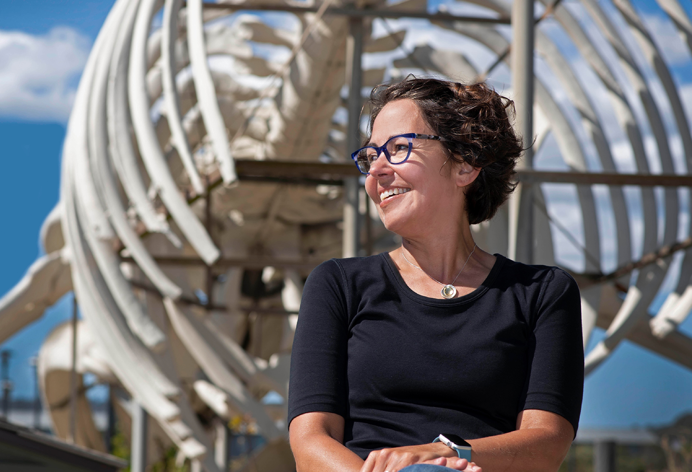
Meet Colossal's Chief Science Officer - Beth Shapiro, Ph.D
Professor of Ecology and Evolutionary Biology at UC Santa Cruz and HHMI Investigator
[ COLOSSAL SCIENTIFIC ADVISORY BOARD MEMBER ]
Beth Shapiro is an evolutionary biologist who specializes in the genetics of ice age animals and plants. As Professor of Ecology and Evolutionary Biology at UC Santa Cruz and HHMI Investigator, Beth uses DNA recovered from bones and other remains to study how species evolved through time and how human activities have affected and continue to affect this dynamic process. Her work focuses on organisms ranging from influenza to mammoths, asking
questions about domestication, admixture, speciation, and pathogen evolution. Her current work develops techniques to recover increasingly trace amounts of DNA such as from environmental and forensic samples. A 2009 MacArthur Fellow, Beth is also an award-winning popular science author and communicator who uses her research as a platform to explore the potential of genomic technologies for conservation and medicine.
LIFE AS WE MADE IT
by Beth Shapiro
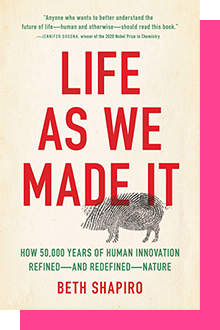 When the 2020 Nobel Prize was awarded to the inventors of CRISPR, the revolutionary gene-editing tool, it underlined our amazing and apparently novel powers to alter nature. But as biologist Beth Shapiro argues in Life as We Made It, this phenomenon isn’t new. Humans have been reshaping the world around us for ages, from early dogs to modern bacteria modified to pump out insulin. Indeed, she claims, reshaping nature—resetting the course of evolution, ours and others’—is the essence of what our species does.
Learn More +How to Clone a mammoth
by Beth Shapiro
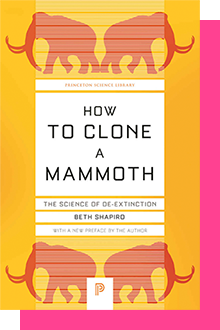 Could extinct species, like mammoths and passenger pigeons, be brought back to life? In How to Clone a mammoth, Beth Shapiro, an evolutionary biologist and pioneer in ancient DNA research, addresses this intriguing question by walking readers through the astonishing and controversial process of de-extinction. From deciding which species should be restored to anticipating how revived populations might be overseen in the wild, Shapiro vividly explores the extraordinary cutting-edge science that is being used to resurrect the past. Looking at the very real and compelling science behind an idea once seen as science fiction, How to Clone a mammoth demonstrates how de-extinction will redefine conservation's future.
Learn More +Company
EXECUTIVE
ADVISORY BOARD
+
We’re also partnering with leaders in critical industry sectors who have deep experience and decades of relationships with Fortune 500 leaders and beyond. This board ensures that we ethically meet our business objectives so our research and development into biosciences can continue to benefit humankind indefinitely.
Ari Kastrati

Biography
Ari Kastrati is the Chief Content, Hospitality and Development Officer (CCHDO) for (NYSE: MGM), an S&P 500® global hospitality and entertainment company. As CCHDO, he is responsible for driving strategic development solutions, creating transformative guest-centric strategies, and curating innovative experiences that deliver long-term value for the company. Mr. Kastrati leads a diverse team representing divisions that include Global design, development, hospitality, sports, entertainment, and retail. The company’s art and culture division and internal real estate efforts focused on leasing and development/partner relations also fall under his purview.
Mr. Kastrati plays a key role in leading MGM Resorts’ development projects around the world, focused on master planning/design, creative, programming and business development of projects such as MGM Japan and MGM Dubai, where he works closely with gaming development, strategic partners, government entities and community officials on the future introduction of integrated resorts (IR’s).
Prior to his current role, Mr. Kastrati was Chief Hospitality Officer, and had previously served as Senior Vice President of Global Food & Beverage. Among his accomplishments within those roles was the strategic reprogramming of the company’s food & beverage landscape to ensure its offerings matched evolving customer demands. Before transitioning to this corporate role, he was the Vice President of Food & Beverage at ARIA and Monte Carlo (now Park MGM). In these roles, he oversaw the daily operations of multiple high-volume restaurants, bars and lounges, as well as catering, banquets and in-room dining.
Mr. Kastrati’s career has included working in executive roles with the Mina Group, Caesars Palace and Charlie Trotter, three premier hospitality brands. In recognition of his work promoting Japanese food culture and products in the US and beyond, Ari had the honor of being named a Cuisine Goodwill Ambassador by the Ministry of Agriculture, Forestry and Fisheries of Japan in 2019.
Ari spent his childhood in Europe and studied in Albania. He and his family are based in Las Vegas and enjoy traveling the world together whenever possible.
Graham Hancock

Biography
Graham Hancock is the writer and presenter of the hit Netflix documentary series Ancient Apocalypse, and author of the major international non-fiction bestsellers The Sign and the Seal (1992), Fingerprints of the Gods (1995), The Message of the Sphinx (1996), Heaven’s Mirror (1998), Underworld (2002), Supernatural (2005), Magicians of the Gods (2015), America Before (2019) and Visionary: The Definitive Edition of Supernatural (2022). Graham is also the author of the epic adventure novels Entangled and War God. His books have sold more than seven million copies worldwide and have been translated into thirty languages. His public lectures, radio and TV appearances, as well as his strong presence on the internet, have put his ideas before global audiences of tens of millions. He has become recognised as an unconventional thinker who raises resonant questions about humanity’s past, about our present predicament and about our future as a species.
Chairman Mark N. Fox

Biography
Mark N. Fox is the Chairman of the Mandan, Hidatsa, and Arikara Nation. Fox is a veteran of the U.S. Marine Corps and earned his law degree in 1993 from the University of North Dakota. First elected Chairman in 2014, Fox is currently serving his third term.
Chairman Fox currently serves on three federal advisory boards for the Department of Energy, the Department of Interior, and the Environmental Protection Agency. He previously served on advisory boards with the Internal Revenue Service and the National Indian Gaming Commission as well. Chairman Fox also served on various national and tribal boards, including the Intertribal Monitoring Association on Trust Funds (ITMA), and four terms as Treasurer of the National Indian Gaming Association (NIGA).
Chairman Fox has also been the Vice Chairman of the United Tribes Technical Center and the United Tribes of North Dakota. He was recently elected Chairman of the Coalition of Large Tribes (COLT).
A fierce proponent of tribal sovereignty, Chairman Fox has dedicated his administration to improving the lives of all MHA Nation members. Under his leadership, tribal members have received increased education, addiction services, and health services. Chairman Fox has also expanded and enhanced tribal infrastructure and transparency in governmental affairs.
Chairman Fox is renowned for his work in the areas of taxation, gaming, energy, and economic development. In his personal time, Chairman Fox enjoys participating in events that endorse good health and endurance challenges.
Mayor Francis Suarez

Biography
Francis X. Suarez is the 43rd Mayor of Miami. As the first Miami-born mayor, he is committed to building a Miami that lasts forever and that welcomes everyone. First elected with a mandate of 86 percent and then re-elected with a mandate of nearly 79 percent, Mayor Suarez has championed the integration of climate adaptive policies, Web 3.0 technology, and a free-market approach to all facets of government as part of his Miami Forever Agenda.
Under his leadership, Miami has cut crime and cut taxes to one of their lowest points in over fifty years, spurring a broad-based economic expansion across Miami. Mayor Suarez has also pursued a package of affordable housing reforms—Miami For-Everyone—that leverages federal opportunity zones with the activation of underutilized land to the supply and overall access to affordable housing for working people and communities of color.
Most recently, Mayor Suarez has championed the development of Miami’s tech economy through Venture Miami along with initiatives that connect education and job training to Miami’s new emerging economic sectors such as Fintech, Medtech, and Greentech. As the son of former Miami Mayor, Xavier L. Suarez, Mayor Suarez learned the values of inclusive, servant-leadership to drive economic prosperity, personal opportunity, fairness, equal rights, and reconciliation for all.
Mayor Suarez earned his bachelor’s degree in finance from Florida International University, graduating in the top ten percent of his class, and then received his law degree from the University of Florida Levin College of Law, where he graduated cum laude. Mayor Suarez was recently selected to serve as an Aspen Institute Rodel Fellow and was also named as a Time Future 100 Leader. He was also named the 20th Greatest Leader in the World by Forbes Top 50. Mayor Suarez currently serves as President of the US Conference of Mayors. He also practices law as Of Counsel for Quinn Emmanuel LLP, an international law firm. Mayor Suarez is married to Gloria Fonts Suarez. They have a son, Andrew Xavier, and a daughter, Gloriana Pilar. They love Miami and consider themselves blessed to raise their family in the Magic City.
Joseph Rohde
Biography
Joe Rohde enjoyed a 40 year career with Walt Disney Imagineering, the branch of the Disney Company that designs and builds physical environments and experiences. During that time he was a pivotal figure in the development of a series of projects that dealt with natural history, culture, and the environment. His work for Disney includes Disney’s Animal Kingdom, a wildlife conservation themed park in Florida, Aulani: A Disney Resort and Spa in Hawaii, which focuses on indigenous Hawaiian art and philosophy as the thematic underpinnings of the guest experience, Villages Nature, an eco-resort adjacent to Disneyland Paris which seeks to make sustainability a romantic ideal, as well as many other projects. He was instrumental in the creation of the Disney Conservation Fund, which has raised over $150 million for projects worldwide.
Joe is also featured on numerous documentaries covering the Disney Company, and in his own documentary, The Leopard in the Land, which chronicles an artistic wildlife conservation expedition fundraiser through Mongolia.
He currently consults for select projects through his company, Joe Rohde Creative, LLC. Virgin Galactic has engaged him as Chief Experience Architect in the development of their space tourism business. He is also working with Jane Goodall on designs for an experience center in Tanzania.
Joe regularly lectures on design, art history, and conservation and has spoken at TED, NASA, SIGGRAPH, and many other venues, focusing on the relationship between narrative structure, team organization, and how this combination can be leveraged to maximize creativity and unique output in the context of large ensemble projects.
He is a member of the Explorer’s Club, and has traveled extensively in some of the most remote regions of the world, often creating art along the way. Joe regularly uses his artwork as a fundraising and awareness raising tool for cultural and environmental causes.
Ric Edelman
Biography
Ric Edelman founded the nation’s largest financial planning firm, as well as the Digital Assets Council of Financial Professionals and an Alzheimer’s research company focused on diagnostics. He and his wife Jean are benefactors of the Jean and Ric Edelman Fossil Park and Museum of Rowan University, a unique site that allows visitors to dig for fossils and take home whatever they find. EFM was named by Smithsonian magazine as one of the five most anticipated museum openings in the world in 2024.
Betsy Atkins

Biography
Betsy Atkins is a digital native 3 time CEO and serial entrepreneur co-founding enterprise software companies in the energy, healthcare and software industries. She scaled companies through hyper growth, helped give shape to the future of digitization and led companies to successful IPO and acquisitions.
She has served on over 39 public boards and been through 18 IPOs.
Her Corporate Board experience covers industries including: Technology, Financial Services, Healthcare, CPG, Automotive, Industrial, Manufacturing, Energy and Retail. She brings an operational perspective of how to tech enable to accelerate business solutions and “time-to-insight” for B2B and D2C enterprises. She leverages broad contemporary knowledge of digital technology to reduce costs, drive efficiency and productivity using AI machine learning analytics to streamline processes.
Betsy brings vision for elegant UX UI customer journey and experience, relentless customer focus and high business discipline around execution. Betsy has written three books including, “Be Board Ready: The Secrets to Landing a Board Seat and Being a Great Director.”
Corporate Governance Thought Leadership Publications/Appearances: Newly published book, Be Board Ready. Regular Contributor: WSJ, Forbes, CNBC PowerLunch, Bloomberg appearances and Yahoo Finance commentator. Betsy is a thought leader on ESG who has catalyzed corporate culture and driven diverse talent infusion globally.
Bob Weis, Ph.D.
Biography
Bob Weis leads Global Immersive Experience Design for Gensler. As former President of Walt Disney Imagineering, Bob brings more than 30 years of leadership creating, designing, and developing some of Disney’s most iconic projects around the globe. His experience in pioneering large-scale groundbreaking and story-driven experiences further expands Gensler’s ability to drive design innovation that meaningfully shapes the human experience.
In leading Immersive Experience Design at Gensler, Bob collaborates with the firm’s global leaders to envision and bring to life unique experiences for clients spanning across our 29 practice areas, including entertainment, lifestyle, hospitality, retail, sports, mixed-use, cultural institutions, wellness, and workplace.
During his time at Disney, Bob led more than 200 major projects around the world with a capital value of more than $30 billion. From the U.S. to Shanghai, Tokyo to Paris, his design and innovation imprint has been indelibly left on theme parks, attractions and rides, resorts, and cruise ships. He has also consulted with major clients including Smithsonian, National Geographic, NASA, and the United States Navy, among others. Bob has been recognized with numerous industry accolades and awards and remains closely connected to his Disney roots.
Bob is the recipient of multiple honors from the Themed Entertainment Association, including Best New Theme Park for Shanghai Disney Resort and the Buzz Price Lifetime Achievement Award. He has been awarded an honorary Ph.D. from Cal Poly School of Environmental Design, where he graduated with a degree in Architecture.
David Spirk
Biography
Dave is a Senior Counselor at Palantir, where he focuses on assisting across the US Government, Allied/Partner, and Commercial business. He is the AI Commissioner for the Global Tech Security Commission and also serves as an Operating Partner at DCVC and as a Senior Advisor to the Founder/CEO of CalypsoAI. Dave is a Board Member at Fortem Technologies, Shift5, and the not-for-profit Special Operations Warrior Golf Foundation. He remains the co-founder and CEO of HoopWERX.
Previously, he served as the Department of Defense’s (DOD) first-Chief Data Officer (CDO). In this role, he stood up DOD’s Chief Data Office and instilled a strong focus on warfighter needs, data governance, and a data ready workforce to inspire a data-driven culture across the department. He developed the DOD’s first Data Strategy, Data Decrees, and Joint All Domain Command and Control Data (JADC2) Implementation Plan. Dave crafted and oversaw the establishment, resourcing, and empowerment of CDOs across the department.
Immediately prior, Dave was the United States Special Operations Command’s (USSOCOM) first-CDO and the Director of Artificial Intelligence (AI) for the United States’ Special Forces. In this role as a direct report to the USSOCOM Commander, he was responsible for the creation of a data-driven decision-making culture while leading the integration of data-driven technologies across all US Special Operations Forces (SOF).
Dave served as the Associate Director for Technology Investment at the Secretary of the Air Force’s (SAF) Concept Development and Management Office. His primary task was to stand up and lead the DOD’s first training quality data production refinery for the Algorithmic Warfare Cross Functional Team (aka, Project Maven), which was the DoD’s pathfinding AI effort.
Dave was previously the Deputy Director of Intelligence at USSOCOM and the United States Central Command (USCENTCOM). At USSOCOM his primary portfolio was on building partner nation and US interagency support for Operation Gallant Phoenix, which was the SOF effort to stem foreign terrorist fighter flows to Iraq, Syria, and Afghanistan. At USCENTCOM, Dave led the Intelligence Directorate’s Divisions for Operations, Plans, Intelligence Surveillance, and Reconnaissance, and Foreign Disclosure/Special Security Office. While at USCENTCOM he served in Afghanistan for a year as the Senior Intelligence Advisor to the Commander of the International Security and Assistance Force during 2010/2011.
At the Office of the Director of National Intelligence (ODNI), Dave was the Deputy Associate Director of National Intelligence for Afghanistan and Pakistan (ADNI Af/Pak). In this role, he was responsible for ensuring strategic alignment of the Intelligence Community’s (IC) Af/Pak and counter-terrorism missions. Dave regularly represented the senior-IC position on Af/Pak matters at the White House and with congressional leaders.
Dave is a former-Marine who served across echelons at various east coast United States Marine Corps (USMC) elements setting the stage for numerous deployments throughout the US Africa Command (USAFRICOM), US Central Command (USCENTCOM) US European Command (USEUCOM), US Indo-Pacific Command (USINDOPACOM), and US Southern Command (USSOUTHCOM).
Richard Weinberg

Biography
Richard has been Chief Executive officer of the Terrace Tower Group since 2007, and is a member of its Executive Board. Richard is responsible for all aspects of the Group’s business, with a specific focus on strategy.
Terrace Tower Group (TTG) is a diversified real estate and investment company, founded by the late Mr John Saunders, co-founder of the Westfield Group. The Group’s interests span the retail and commercial property sectors in Australia and the West Coast of the US. Over the last decade, Richard has been active in diversifying TTG’s activities as part of the development of its Family office to include a broad portfolio of investments across multiple asset classes.
Richard is also a keen entrepreneur and investor with interests in technology, media, entertainment, and the arts. He is a partner in Material Pictures (LA based Producer and Financier of Sundance Audience Award Winner – Brittany Runs a Marathon, SXSW Audience Award Winner – Get Duked, yet to be released The Violent Heart, Pawn Sacrifice, Z for Zachariah, amongst other film titles) Iconic Images (London based owner and manager of many of the worlds most renowned photographers including Terry O’Neil), 8 Angel (part of the 8VC group) and KarlinBerg Entertainment (an Australian TV Content Production Company co-founded in 2020, focused on unscripted TV and documentary film projects), amongst many of his interests.
Ben Gorham

Biography
A native Swede, born to an Indian mother and a Canadian father, Ben grew up in Toronto, New York and Stockholm. He graduated from the Stockholm art school with a degree in fine arts, but a chance meeting with perfumer Pierre Wulff convinced him that he’d rather create fragrances than paintings. With no formal training in the field, Gorham, 31 years old , sought out the services of world renowned perfumers Olivia Giacobetti and Jerome Epinette, explaining his olfactory desires and letting them create the compositions. As an outsider in the beauty industry, Ben is somewhat of an anomaly and has been recognized for his personal style and connection to fashion and art in several international magazines such as French Vogue, Vanity Fair, Elle, V Magazine and Fantastic Man to name a few.
Bjarke Ingels
Biography
Bjarke Ingels founded BIG – Bjarke Ingels Group in 2005 after co-founding PLOT Architects in 2001 and working at OMA in Rotterdam. Bjarke defines architecture as the art and science of making sure our cities and buildings fit with the way we want to live our lives. Through careful analysis of local culture and climate, the ever-changing patterns of contemporary life, and the ebbs and flows of the global economy, Bjarke believes in the idea of information-driven design as the driving force for his creative process. Named one of the 100 Most Influential People in the World by Time Magazine in 2016, Bjarke has designed and completed award-winning buildings globally.
Bjarke was appointed Knight of the French Order des Arts et des
Lettres and the Knight’s Cross of the Order of Dannebrog in 2019 and 2018, respectively. In 2021, he was selected as an ambassador of the EU’s New European Bauhaus. He was named an Honorary Fellow by the AIA in 2020, the RIBA in 2015 and the RAIC in 2014. The Wall Street Journal recognized Bjarke as Innovator of the Year in 2011, the same year he received the Danish Crown Prince’s Culture Prize. Bjarke was also awarded the Golden Lion at the Venice Biennale in 2004 and the ULI Award for Excellence in 2009. Alongside his architectural practice, Bjarke has taught at Harvard University, Yale University, Columbia University and Rice University and is an honorary professor at the Royal Academy of Arts, School of Architecture in Copenhagen. He is a frequent public speaker and continues to hold lectures in venues such as TED, WIRED, AMCHAM, 10 Downing Street, the World Economic Forum and many more.
Robert Nelsen

Biography
Robert Nelsen is a co-founder and a Managing Director of ARCH Venture Partners. He has played a significant role in the creation, early sourcing, financing, and development of more than 100 companies, including over 39 which have reached valuations exceeding $1 billion. Mr. Nelsen is focused on generating new ideas for disruptive technologies or business models and partnering with founding management teams and entrepreneurs to execute on these visions by advancing novel platform technologies with the overarching goal of improving health care and outcomes. Recent successes include founding National Resilience to transform pharma manufacturing in the U.S., Vir Biotechnology’s COVID-19 antibody therapy, IPOS for Prime Medicine, Beam Therapeutics and Sana Biotechnology. Notable early-stage investments include Illumina (ILMN), Alnylam Pharmaceuticals (ALNY), Juno Therapeutics (sold to Celgene for $11.9 billion) and GRAIL (Sold to Illumina for $10 billion). Other prominent biotechnology and life sciences company investments include Array BioPharma (sold to Pfizer for $11.4 billion), Receptos (sold to Celgene for $7.2 billion), Sage Therapeutics (SAGE), Denali Therapeutics (DNLI), Karuna Therapeutics (KRTX), BEAM, Prime Medicine, Lyell Immunopharma, Editas (EDIT), Agios Pharmaceuticals (AGIO), Ikaria, deCODE Genetics (sold to Amgen), 10x Genomics, and Semma Therapeutics (sold to Vertex Pharmaceuticals), among others. Mr. Nelsen is a director of VIR, SANA, National Resilience, Lyell Immunopharma, and serves as Chairman of Hua Medicine, among others. Mr. Nelsen holds an M.B.A. from the University of Chicago and a B.S. from the University of Puget Sound with majors in Economics and Biology.
Gary Brecka
Biography
Gary Brecka is the Co-Founder/Chief Biologist of 10X Health and the founder of The Ultimate Human. With more than 20 years of Bio-Hacking and functional medicine experience, he is obsessed with the function and performance of the human body and finding innovative ways to help people achieve absolute peak function in their own bodies. He works with a hand-picked clinical team of Board-Certified physicians (M.D.’s), PhD researchers, business leaders, functional medicine experts, motivators, and scientists with one relentless mission…..to uncover the safest and fastest way to optimize your mind, body, and spirit through modern science. Gary has worked with and everyone from CEOs to professional athletes from the UFC, NFL, Professional Boxing, and entertainment industries. He has changed the lives of countless individuals….
Erik Anderson

Biography
Erik Anderson is a global innovation leader, investor and philanthropist. He is Founder and CEO of WestRiver Group, a thematically-driven investment platform that manages funds and builds companies in the global innovation economy.
Anderson has received the Ernst & Young Entrepreneur of the Year Award, was named by Goldman Sachs as one of the Top 100 Most Intriguing Entrepreneurs and was also awarded the Transformative CEO Award by The CEO Forum Group. Early in his career, Seattle’s Puget Sound Business Journal recognized Anderson as one of the Top “40 under 40” young achievers and emerging leaders.
He is also Chief Executive Officer of the DCRB+ Special Purpose Acquisition Companies (SPACs), which seek to identify impactful companies with scalable solutions to decarbonize the global economy. He currently serves on the Board of Directors for Hyzon Motors Inc., a zero-emissions, hydrogen-powered commercial vehicle company with leading fuel cell technology, as well as serving on the board of Solid Power, an industry-leading developer of all-solid-state battery cells
Anderson became Vice Chairman of Callaway Golf Company in March 2021. Prior to Callaway, he served as the Executive Chairman of Topgolf Entertainment Group. Under his leadership, Topgolf became one of the fastest-growing sports and entertainment brands in the world. In 2020, he was ranked by Golf Inc. as the No. 4 Most Powerful Person in the Golf Industry and was No. 3 in 2019 and 2018
In November 2020, Anderson joined Silicon Valley Bank (SVB) as the Executive Chairman of the SVB Capital Credit Platform and serves as Chair of the SVB Capital Advisory Committee.
Anderson also serves as Chairman and CEO of Singularity Group, a global community using exponential technologies to tackle the world’s biggest challenges. He is also Vice Chairman of ONEHOPE, a cause-centric consumer brand and technology company, known for their award-winning wine and world-class vineyard in Napa, Calif. He is also Co-Chairman of TOCA, the world’s first technology-enabled soccer experience company. Additionally, Anderson is the founder of America’s Foundation for Chess, currently serving 160,000 children in the United States with its First Move curriculum. For more than 10 years he served on the Board of Play Magnus, an interactive chess app inspired by Magnus Carlsen, the reigning World Chess Champion.
Anderson was on the Board of Avista Corp (NYSE:AVA), an energy management company for more than sixteen years and served as Chairman of the Finance Committee for most of his tenure. His investment experience includes being Partner at Frazier Healthcare Partners, CEO of Matthew G. Norton Co. and Vice President at Goldman, Sachs & Co.
He holds a master’s and bachelor’s degree in Industrial Engineering from Stanford University and graduated cum laude with a bachelor’s degree in Management Engineering from Claremont McKenna College.
Lauren Knausenberger
Biography
Lauren Barrett Knausenberger is the Chief Information Officer for the Department of the Air Force, comprised of the U.S. Air Force and U.S. Space Force. Ms. Knausenberger leads two directorates and supports 20,000 cyber operations and support personnel around the globe with a portfolio valued at $17 billion. She provides oversight of the Air Force’s Information Technology portfolio including the Information Technology investment strategy from networks to cloud computing, Enterprise policies, information resources management, IT innovation initiatives, information assurance, and related matters for the Department of the Air Force. As Chief Information Officer (CIO), Ms. Knausenberger delivers cyber security, and enforces Freedom of Information Act and Privacy Act laws. She integrates Air Force warfighting and mission support capabilities by networking and securing air, space, and terrestrial assets. Ms. Knausenberger also leads career management initiatives for 10,000 IT/Cyber civilian personnel across all human resources facets from recruiting to professional development.In 2017, Ms. Knausenberger joined the U.S. Air Force to drive innovation across the Department of Defense, speed adoption of emerging technologies, and create stronger partnerships between DoD, start-ups, and the venture community as the Chief Transformation Officer and Director of Cyberspace Innovation under the Deputy Chief Information Officer. Prior to joining the AirForce, she was the founder and President of Accellint Inc., a consulting firm and Venture Partner with NextGen Angels, specializing in solving problems of national security importance, and investing in commercial technologies that could be applied to a government mission. As CIO, she continues to go after hard problems, calculates risk differently, and ensures to keep a constant pulse on the voice of the Airmen.Prior to her time as an entrepreneur and venture capitalist, Ms. Knausenberger held positions of increasing responsibility at American Management Systems and CACI, beginning as a systems analyst and designer, then as a go-to project manager for program turnarounds, a program manager for large IT and finance programs, and finally as a division manager overseeing much of the company’s Intelligence Community portfolio. During this time, Ms. Knausenberger had the pleasure of serving the mission of the CIA directly as well as leading and mentoring cross-functional teams and organizations supporting national security missions.Ms.Knausenberger earned a Bachelor of Science degree in decision and information sciences from University of Maryland and a Master of Business Administration from University of Pennsylvania Wharton School of Business.
Anthony Vinci, Ph.D.

Biography
Anthony Vinci, PhD sits at the intersection of technology, national security and finance. He is a Managing Director at Cerberus Capital Management, an Adjunct Senior Fellow with the Technology and National Security Program at the Center for a New American Security (CNAS) and a member of the Board of Trustees Technology Committee at MITRE Corp. He served as the Chief Technology Officer and Associate Director for Capabilities at the National Geospatial-Intelligence Agency (NGA). As CTO, he drove the agency’s efforts to bring Artificial Intelligence (AI) into the enterprise and to form public private partnerships with Silicon Valley and other commercial technology centers. As Associate Director, he was a member of the agency’s Executive Committee and was responsible for overseeing NGA’s offices of technology, R&D, contracting, financial management, program development and strategy. Previously, Anthony was on the core management team at Bridgewater Associates, the hedge fund founded by Ray Dalio. He was also the founder and former CEO of Findyr, a technology company which crowdsourced data from around the world, as well as Leviathan Analytics, an AI and geospatial data analytics company focused on global risk. Anthony received his Ph.D. in International Relations from The London School of Economics and studied Philosophy at Reed College and the University of Oxford. He is a member of the Council on Foreign Relations (CFR), Business Executives for National Security (BENS) and a Fellow of the Explorers Club.
Kevin Mayer
Biography
Kevin Mayer is Co-CEO and founder of Candle Media, a next generation media company, home
to category-defining brands including Hello Sunshine, Moonbug Entertainment, Faraway Road
Productions and Westbrook Media. Mr. Mayer is also co-founder and managing director of
Smash Capital, serves as Chairman of DAZN Group, a major global sports media company, and
is on the Board of the Forest Road Company.
Prior to founding Candle and Smash Capital, Mr. Mayer served as CEO of TikTok and COO of
its parent company, ByteDance.
Mr. Mayer is a former long-serving top executive at The Walt Disney Company where as Chief
Strategy Officer he oversaw strategy and new business development as well mergers and
acquisitions for the company, including the purchases of Pixar, Marvel, Lucasfilm/Star Wars,
Bamtech, 21st Century Fox, and others. Mr. Mayer subsequently served as Chairman for its
Direct-to-Consumer and International segment which included developing and launching global
streaming platforms Disney+ and ESPN+, overseeing Hulu, managing global advertising,
content, and channel sales and distribution, and running international media and studio
operations.
Mr. Mayer is also an advisory board member at Salesforce. He is on the board of Tinuiti, a
private performance marketing agency as well as Beachbody, a leading online/connected
fitness company.
Mr. Mayer holds a Bachelor of Science in Mechanical Engineering from MIT, a Master of
Science in Electrical Engineering from San Diego State University and a Master of Business
Administration from Harvard University.
John McKinley

Biography
John McKinley has a unique background of running huge technology organization as well as startups. John has run technology for such companies as General Electric, Merrill Lynch, AOL, and News Corporation. John has been awarded CTO of the Year, and has received a variety of awards for products he led the development of in the financial services, entertainment, and education sectors.
John was an early champion of new computing models, starting with 18 years ago with one of the first aggressive open source server migrations in financial services while at Merrill Lynch. John also was one of the first large enterprise users of cloud-based security services like Postini, drove the next-gen open platform migration efforts at AOL, and served on the Board of cloud-based security company MessageLabs, which had a very successful exit to Symantec. At Fox/News Corp, John also led the migration to cloud-based media and ad systems that allows the company to deliver 22 different consumer video offerings (American Idol, MasterChef, Fox Sports, etc.) in only 18 months. John’s more recent efforts in the cloud sector include advising players like DigitalOcean on where to take their consumer and SMB cloud computing offerings.
John is also strategic advisor to Workspot, a new DaaS offering that is bringing disruptive technology and economics to the virtual desktop marketplace, competing as a next-gen alternative to VMware and Citrix. He is also involved in a new AI-based crypto-trading platform that is employing advanced pattern recognition and hedging strategies across a variety of cryptocurrencies.
John’s latest focus is in the AI arena. John’s work in the area of artificial intelligence goes back nearly two decades. His initial work in the AI sector was the delivery of the first robo-advisor solution for Merrill Lynch, which allowed the company to better serve a wider range of consumers.
John also has done work in the area of natural language processing. Powerset was one of the first sophisticated commercial NLP offerings in the market. It was sold to Microsoft, and its technology became an integral part of the Bing query parsing solution.
John has also been an advisor to companies in the bot space, most notable Conversable (exit to LivePerson), which has delivered AI-based conversational solutions for such clients as Pizza Hut, Sony, Viacom, P&G, and others. John’s latest efforts involve being strategic advisor to HyperGiant, which has emerged as a market leader in the commercialization of ML/AI technology, working with everyone from NASA to F100 companies.
Over the last several years, companies in his portfolio have very successful exits to such acquirers as Microsoft, Google, Yahoo, Magic Leap, Symantec, RealPage, LiveAgent, AOL, Zynga, Alarm.com and others. John also helped lead the successful IPO of Proxicom.
John has served on the board of several private and public companies, and has experience servicing on and/or leading Technology and Audit committees of multiple organizations. John currently serves on the board of Equifax, where he chairs the Technology Committee and also serves on the Audit Committee. At EFX, he has worked with management to dramatically improve the security of the company, which has led to one of the largest and fastest improvements in the company’s NIST risk score the company’s independent assessor has ever seen. He is now assisting the firm as it undertakes one of the largest cloud-native software migration in the world.
John is also involved in the construction technology industry. He is on the board of MYRO International, which designs robots for specific use cases in construction, including commercial painting. He is also advisor to a stealth-mode AI-based trading company in the crypto market.
John started his career at Ernst & Young, where he helped establish the computer security practice in the United States. As a partner in the firm, he also co-led the largest outsourcing engagement the firm ever undertook, and helped created the Advanced Development Center, a new model for software development engagements for clients.
Mr. McKinley is a graduate of the Wharton School. He lives in Great Falls, Virginia with his wife Cindy and two children, Liam and Kylie.
H. Wyman Howard III

Biography
Wyman Howard is a transformational leader with extensive combat mission experience and a proven 32 year record of unparalleled change leadership, creativity and risk mitigation for outcomes of strategic consequence to the security of the United States of America. He is a fourth generation Naval Officer and a 1990 graduate of the United States Naval Academy where he was a member of the Navy crew team. A native of Virginia, he is an Alexandria City High School alumnus . Wyman is a thought leader in sustainability; disruptive technologies; leadership & human capital assessment; performance; retention; inclusivity; and diversity – with relationships and linkages to global business and foreign government military and intelligence service liaison partners. He is deeply experienced and briefed in geo-political risk and opportunities across disruptive technologies – including multi-domain autonomous systems; electronic warfare; cyber threats and risk mitigations; and commercial, civil, and military & intelligence space sector applications. A retired U.S. Navy Rear Admiral (Upper Half) with over 32 years in the SEAL Teams and joint special operations, Wyman commanded at all levels of Special Operations, including service as Commander Naval Special Warfare Command, Special Operations Command Central, and Naval Special Warfare Development Group. He has distinctive leadership experience at the strategic, operational and tactical levels of joint, intelligence, interagency and foreign partner operations. He had multiple tours in command of Special Operations Joint Task Forces and was among the first to deploy into Afghanistan following the attacks of September 11, 2001. The combat contributions of the teams he commanded, and with whom he served, were recognized with five Presidential Unit Citations, Navy Unit Commendation and four Joint Meritorious Unit Awards. Wyman’s joint, interagency and policy staff experience includes service as the second Director of Operations for the National Geospatial-Intelligence Agency; Deputy Director for Global Operations, Office of the Chairman of the Joint Chief of Staff; and Director for Counterterrorism Policy in the Office of the Secretary of Defense. He holds a Master of Business Administration from the TRIUM consortium of the London School of Economics, HEC Paris School of Management, and New York University’s Stern School of Business; a Master of Science in National Security and Resource Strategy with a focus on space from the Eisenhower School, where he earned three Commandant’s awards for excellence in writing; and a Professional Certificate in Artificial Intelligence and Business Strategy from the Massachusetts Institute of Technology’s Computer Science and Artificial Intelligence Laboratory. His professional military education also includes the Naval War College, Joint Special Operations University, and the Defense Language Institute. He is a senior advisor principally focused on climate and sustainability solutions. He is an active volunteer within the community, a member of the Council on Foreign Relations, and an Eagle Scout.
Richard Garriott

Biography
Richard Garriott de Cayeux is an avid Explorer and Creator. His explorations have taken him on expeditions from pole to pole and across all 7 continents, he has orbited the earth abord the ISS and been on numerous deep submersible voyages including to the Challenger Deep. Richard currently serves as the President of The Explorers Club.
His work on expeditions commonly includes the search for extremophiles, environmental impacts and educational outreach. He has used exploration as the inspiration for much of his creations such as the virtual worlds he created through his 40 year career as a principal shaper of the video gaming industry.
Richard is also a founding father of the videogame industry. He has been inducted into the computer gaming hall of fame and has received the industry lifetime achievement award. He is credited with creating the now ubiquitous term “avatar” for one’s virtual self and the category of massively multiplayer games (MMORPGs).
Richard is also a principal shaper of commercial human spaceflight. He cofounded Space Adventures, the company which arranged the space flights for the first 7 private citizens live aboard the International Space Station. The son of a NASA astronaut, he became the first second-generation astronaut and remains a key leader in civilian and commercial space as an investor and Board member of institutions such as the X-Prize Foundation, Space Adventures, Space X and ZeroG Corp.
Victor Vescovo
Biography
Victor L. Vescovo is a private investor with over thirty years of experience in a variety of complex business situations. He co-founded private equity firm Insight Equity in 2002 with his business partner, Ted Beneski, and raised over $1.5 billion in equity capital across four funds investing primarily in industrial, asset-intensive industries. Victor’s primary investment focus while at the firm were in the defense, aerospace, and electronics industries with a specific emphasis on executing operational improvements at the investments as Insight’s Chief Operating Officer. In 2023, he departed Insight in order to focus on his own investments with new capabilities to support industrial startups, life sciences, and other areas of venture capital and special situations.
Victor received his bachelor’s degree from Stanford University, a Master’s Degree from the Massachusetts Institute of Technology, and received an MBA from Harvard Business School where he graduated as a Baker Scholar. Additionally, Victor served 20 years in the U.S. Navy Reserve as an intelligence and targeting officer, retiring in 2013 as a Commander.
In 2017, Victor completed the “Explorer’s Grand Slam” which requires climbing the highest peak on all seven of the world’s continents including Mt. Everest and skiing at least 100 kilometers to the North and South Poles. He piloted the first repeated dives to the ocean’s deepest point, Challenger Deep, in the Pacific’s Mariana Trench — now fifteen times, and in August 2019 became the first person to visit “The Five Deeps,” the deepest point in all five of the world’s oceans. Victor has now personally explored the bottom of seventeen deep ocean trenches and has made three dives to the Titanic including the only solo dive ever made there. He and his team also discovered and surveyed the two deepest shipwrecks in the world: the USS Johnston in 2021 and the deepest, the USS Samuel B. Roberts at 22,600 feet, in 2022. In 2025, the US Navy announced that T-AGOS 26, a new ocean surveillance vessel of the Explorer class, would be named after him.
He is also a commercially rated, multi-engine jet, seaplane, and helicopter pilot, a certified submersible test pilot, and recently flew into space on Blue Origin’s New Shepard rocket, becoming the first person in history to climb Mount Everest, dive to the bottom of the ocean, and visit space.
Linda Avey
Biography
Linda Avey is the co-founder and CEO of Austin-based Precisely (precise.ly), a digital assistant for automating routine medical flows and implementing personalized, value-based care.
In 2006 Linda envisioned and co-founded 23andMe, the leading consumer genetics research company now trading on NASDAQ (ME). Her experience in the genetics research industry, and its need for more participants, led to her concept of the 23andMe research model, which links genetic data to health information from the company’s millions of users. This is now fueling the discovery of potential drug targets and landing pharmaceutical partnerships valued in the hundreds of millions USD.
Linda is on the advisory board of Alphabet’s life science subsidiary Verily and the Board of Fellows of Stanford Medical School. She was the founding independent board director at Rock Health, the first venture fund dedicated to digital health, where she advised startups ideating new ways of delivering healthcare.
Peter Diamandis

Biography
Recently named by Fortune as one of the “World’s 50 Greatest Leaders,” Peter H. Diamandis is the founder and executive chairman of the XPRIZE Foundation, which leads the world in designing and operating large-scale incentive competitions. He is also the executive founder of Singularity University, a graduate-level Silicon Valley institution that counsels the world’s leaders on exponentially growing technologies. As an entrepreneur, Diamandis has started over 24 companies in the areas of longevity, space, venture capital and education. He is co-founder of BOLD Capital Partners, a venture fund with $300 investing in exponential technologies and longevity. He is co-founder and Vice Chairman of Celularity, Inc., and Vaxxinity, Inc. Diamandis is a New York Times Bestselling author of two books: Abundance – The Future Is Better Than You Think and BOLD – How to go Big, Create Wealth & Impact the World. His newest book in this series of exponential technologies—The Future is Faster Than You Think—was released in 2020.He earned degrees in molecular genetics and aerospace engineering from the MIT and holds an M.D. from Harvard Medical School.Diamandis’ favorite saying is “the best way to predict the future is to create it yourself.”
David Szekeres

Biography
David Szekeres is currently the Chief Operating Officer of Heron Therapeutics. David is responsible for a broad range of operational areas, including finance, corporate strategy & business development, legal, human resources, investor relations & corporate affairs, facilities and information technology. David is a seasoned executive with almost 20 years of biotechnology, investment banking, finance and legal experience in the life sciences sector. He also has extensive experience in developing and executing biotechnology growth strategies with expertise in corporate strategy, mergers and acquisitions, partnering on more than $30 billion in biotechnology transactions, and raising more than $2 billion for various companies in the biotechnology space. Additionally, David has founded or been a lead director of four different companies in the areas of biotechnology, artificial intelligence and software.
Nyalleng Moorosi
Biography
Nyalleng is a research software engineer at Google working on topics related to ethics and fairness in machine learning. Before Google she was a senior researcher at the South African Council for Scientific and Industrial research, where she worked closely with government and academic institutions to develop products to understand phenomena such as Rhino poaching with the South African Park services and election sentiment analysis with the South African Broadcasting Corporation.
Outside of formal work she is involved in efforts to democratize AI; she is a founding member of the Deep Learning Indaba, the largest machine learning consortium of AI/ML practitioners in Africa, a member of A+ Alliance an international coalition that seeks to not only detect, but correct, gender bias in Artificial Intelligence.
Tom Gruber
Biography
Tom Gruber is a product designer and entrepreneur who uses AI technology to augment human intelligence. At Colossal, he plays the role of Impact Advisor. He was co-founder and head of design for the team that created Siri, which brought AI to the mainstream and established the modern paradigm of virtual assistants. At Apple for over 8 years, Tom led the Advanced Development Group that designed and prototyped new capabilities for products that bring intelligence to the interface. Tom promotes the philosophy of Humanistic AI, which he presented in a popular TED talk. He was a founding board member of the Partnership on AI to Benefit People and Society and advocates for the Center for Humane Technology. Throughout his career, Tom has explored the intersection of AI and the UI between humans and computers, particularly for human communication and knowledge sharing. He was a Stanford AI researcher, and has founded several pioneering companies.Tom advises companies and organizations that use AI to have a positive impact on humanity, including leaders in Collaboration, Semantic Search, Natural Language Processing, Mental Health Care, Assistive Neurotech, and Adaptive Music.
Company
Conservation
ADVISORY BOARD
+
The ultimate aim of de-extinction and rewilding is to restore delicate, ecosystems back to healthier, more planet-friendly states. Thus it’s critical that we partner with some of the sharpest and most experienced minds in conservation today. For their leadership and advisement, we are forever grateful.
Mike Phillips
Biography
Mike Phillips has served as the Executive Director of the Turner Endangered Species Fund and advisor to the Turner Biodiversity Divisions since he co-founded both with Ted Turner in June 1997. Before that, Mike worked for the U.S. Department of Interior, leading historic efforts to restore red wolves to the southeastern US and gray wolves to the Yellowstone National Park. He also conducted important research on the impacts of oil and gas development on grizzly bears in the Arctic, predation costs for gray wolves in Alaska, and dingo ecology in Australia. These days, Mike is an advisor to the Rocky Mountain Wolf Project.
Mike worked in Colorado and assembled a political team that successfully passed a ballot measure in 2020 that mandated wolf restoration to the western half of the state. This marked the first time in history that direct democracy had been used to advance endangered species recovery. He was the 2021 recipient of the Aldo Leopold Award, the highest honor bestowed on wildlife biologists by The Wildlife Society recognizing wildlifers’ lifetime contributions to the field.
Hon. Aurelia Skipwith, J.D.
Biography
The Honorable Aurelia S. Giacometto is the General Counsel and co-founder of AVC Global. A premier logistics company that works with National governments to secure the entry and sale of pharmaceuticals into their countries. She recently served as CEO of the International Order of T. Roosevelt, a start-up not-for-profit conservation organization, where she was responsible for establishing their infrastructure and developing their programs that aligned with the mission to preserve Nature’s precious resources through conservation, education, and ingenuity through science and stewardship. Aurelia has over 15 years of experience in regulatory compliance in various fields of agriculture, environmental stewardship, and management of fish and wildlife populations. She worked as a biologist developing sustainable crops at Monsanto, and as a legal counsel at Alltech Inc., an all-natural livestock feed operation. In 2017, she was appointed by President Trump as Deputy Assistant Secretary in the Department of the Interior and 2019, she was confirmed by the U.S. Senate as the 22nd Director of the U.S. Fish and Wildlife Service, where she led the 8500-employee agency with over 850 million acres of land and water to revolutionize business operations, improve service and grant more access to the American people. Aurelia is passionate and committed to wildlife, the environment, science, and sustainable development. In her spare time, she works on various projects, including applying new digital technologies toward conserving plants and wildlife and operating a thriving real estate rental business in Missouri, Indiana, and South Dakota. She received her Bachelor’s degree from Howard University, Master’s degree from Purdue University and law degree from University of Kentucky’s College of Law. She serves on several boards, including Ramaco Resources, a publicly-traded metallurgical coal company, Steamboat Institute, Rubicon Institute, and Ducks Unlimited’s Conservation Program Committee. Aurelia enjoys the outdoors and you will usually find her outside fishing, hunting, or running. She holds a sub-3-hour marathon time.
Jason Baldes (Eastern Shoshone)

Biography
Jason Baldes, an enrolled member of the Eastern Shoshone Tribe, received both his bachelor’s and master’s degrees in Land Resources & Environmental Sciences from Montana State University, where he focused on the restoration of buffalo/bison to Tribal lands. In 2016, he spearheaded the successful effort to relocate a herd to the Wind River Indian Reservation and works with both the Eastern Shoshone and Northern Arapaho Tribes in buffalo management and expansion. He is an advocate, educator and speaker on Indigenous cultural revitalization and ecological restoration who has also served as director of the Wind River Native Advocacy Center, where he was instrumental in the passing of the Wyoming Indian Education for All Act. He currently splits time as executive director of the Wind River Tribal Buffalo Initiative, and Tribal Buffalo Program Senior Manager for the National Wildlife Federation’s Tribal Partnerships Program. Jason sits on the board of directors of the Inter-Tribal Buffalo Council and the board of trustees for the Conservation Lands Foundation.
Barney Long, Ph.D.

Biography
Dr. Barney Long works on the conservation of endangered mammal species and the thematic approaches required to achieve the recovery of their populations. He has worked extensively on Saola, Sumatran and Javan Rhino, Tiger, Gibbons, Doucs and a host of other species across the world. A focus of his work is protected area management effectiveness and the prevention of poaching.
Prior to joining Re:wild, Dr. Barney Long led the Species Program at WWF-US. Barney started his career in Southeast Asia exploring the region during baseline biodiversity inventory surveys and searching for presumed extinct primates. Initially using community-based and protected area approaches to conserve species, he expanded to the integration of species conservation within wider landscape and socio-economic development processes on which he conducted his doctoral research.
A key interest of Barney’s is how to raise the quality of implementation at scale through developing thematic approaches to improving protected area management effectiveness, the prevention of poaching, and species conservation and recovery planning. Barney is also a strong believer in the power of partnerships for conservation and works extensively with the IUCN Species Survival Commission, the SMART, Conservation Assured, and Zero Poaching partnerships.
Education: Ph.D., Biodiversity Management, DICE, University of Kent at Canterbury, B.S. Zoology, University of Bristol
Ralph Chami, Ph.D.

Biography
Ralph Chami has over 32 years of experience as a financial economist, with 25 years at the International Monetary Fund (IMF). He has served as a consultant for the World Bank as well as for the private sector. He is the co-founder of Blue Green Future and Rebalance Earth, and holds visiting professor positions at Williams College and the University of Victoria. He is an expert in a range of macro-financial topics including remittances, fragile states, financial inclusion, financial market development, banking regulation and risk management. Ralph recently retired from the IMF to work on climate change and biodiversity loss, developing a framework for valuing natural capital, fauna and flora, to build an equitable and nature-positive economy. He has developed the field of “Science-Based Finance,” and is a sought-after speaker on developing nature-positive markets. His work on valuing natural capital has been featured at TED2022, TEDx Florence, NPR, National Geographic, Financial Times, The Economist, Washington Post, WEF, among others, along with peer-reviewed journals. Ralph has a BS from the American University of Beirut, an MBA in Finance and Statistics from the University of Kansas, and a Ph.D. in Economics from the Johns Hopkins University. Ralph has also now been invited to join the Planetary Guardians and is the Chief Economist for WAVE.
Vikash Tatayah, Ph.D.

Biography
Dr. Vikash Tatayah is the Conservation Director and Assistant Treasurer of the Mauritian Wildlife Foundation and has been active in conservation for over 28 years. Vikash has spearheaded numerous conservation projects, including the reintroduction of endemic birds and seabirds, captive breeding programs, and habitat restoration across Mauritius, Rodrigues, and surrounding islands. He also played a pivotal role in resolving human-wildlife conflicts, such as the Mauritius Fruit Bat project, was a key figure in the response to the Wakashio oil spill, and championed the proclamation of the Mauritius Kestrel (Falco punctatus) as the National Bird of Mauritius.
In addition to his leadership within the Mauritian Wildlife Foundation, Vikash is the co-chair of the IUCN Mascarene Islands Plant Specialist Group and an elected member of BirdLife’s African and Global Councils. His work includes collaboration with international organizations like BirdLife, IUCN, and Botanical Gardens Conservation International, as well as universities worldwide. Vikash has published over 140 peer-reviewed articles, co-authored books, and recently became an Adjunct Research Fellow at Curtin University and a member of Colossal Biosciences’ Conservation Advisory Board. He has featured in a very long list of local and international press, news, and documentaries.
Amongst his other interests, Vikash is passionate about history and wildlife, has authored several history articles and books, is a bibliophile, collects shells (only dead ones!), and is an active gardener and loves all music genres, cinema and DIY (carpentry, electricals, plumbing, painting), and tries to spend time with his wife and three children, family, and friends.
Steven Rinella
Biography
Steven Rinella is the founder and Chief Creative Officer of MeatEater, an outdoor lifestyle and media brand. Rinella was raised as a hunter, angler, and trapper in Michigan before beginning his career as a writer. He has written over a dozen books and audio originals dealing with hunting, fishing, wild foods, history, and human relationships to wildlife, including American Buffalo: In Search of a Lost Icon. Rinella has multiple best sellers, including the #1 New York Times Best Seller, Catch A Crayfish, Count The Stars, which was his first children’s book. He hosted twelve seasons of the TV show MeatEater, which premiered multiple times as a Netflix Original, and he is the host and creator of The MeatEater Podcast, which garners over 40-million downloads annually. Rinella is the recipient of the Theodore Roosevelt Conservation Partnership’s Conservation Achievement Award.
Cristina Mormorunni (Métis/Sardo)
Biography
ISSISTSÁAKIIKSI/CRISTINA MORMORUNNI (Métis/Sardo)
Cristina is the co-founder of INDIGENOUS LED and currently serves as its Director. She holds responsibility for strategic leadership, program development & creative direction. She has 30 years of applied conservation experience from the Arctic to the Antarctic leading campaigns & designing biocultural conservation strategies for non-profits, foundations & individual donors. She also serves as the Founder & Principal of the TERRAMAR collective, which provides strategic advice to foundations and non-profits interested in investment in Indigenous-led conservation and the protection of biocultural diversity. Cristina has a Master’s in policy from the University of Washington and is also a proud graduate of the Institute of American Indian Arts MFA Program. Cristina is devoted to laying the foundation for the return of 30M Buffalo to the North American continent. She lives in Oga Po’geh (White Shell Water Place) or Santa Fe and shares breath with the past, present, and future generations of Northern & Southern Tewa (often identified as Tanos) and Taytsúgeh Oweengeh (Tesuque Pueblo), who are part of a much larger sovereign Indigenous landscape.
Joanna Lambert, Ph.D.

Biography
Dr. Joanna Lambert is a scientist and tenured professor of evolutionary ecology and conservation biology at the University of Colorado – Boulder, where she also serves as Director of the American Canid Project. Born and raised in industrial England and an immigrant to the Rust Belt of the United States, Joanna Lambert spent her formative years observing wildlife in heavily urbanized landscapes. She has spent her adult life making up for this by traveling to some of the planet’s most remote regions to study wild animals in wild places. Her research has now taken her to all seven continents, but a major focus has been on equatorial Africa, where she studies primates such as chimpanzees, and the Greater Yellowstone Ecosystem, where she studies carnivores such as grey wolves.
Lambert has published several books and hundreds of peer-reviewed articles on her research on the behavioral ecology, physiology, and evolution of wild mammals. For her efforts, she has been elected as a Fellow of the American Association for the Advancement of Science and a Fellow of the Linnaean Society of London – the institution where Charles Darwin first presented his theory of evolution. Previous to her position at the University of Colorado – Boulder, Lambert was a Professor at the University of Texas, a Visiting Scientist at Duke University, an Associate Professor at the University of Wisconsin – Madison, an Assistant Professor at the University of Oregon, and Program Director at the National Science Foundation. She is also a Master Instructor at the Yellowstone Institute and teaches intensive field seminars in Yellowstone National Park. She has held numerous Editorial positions for peer-reviewed science journals such as Frontiers in Mammal Science, Oecologia, PLoS ONE, Diversity, Integrative Zoology, Tropical Conservation Science, American Journal of Biological Anthropology, American Journal of Primatology, and African Primates.
Throughout almost 40 years of field research worldwide, she has witnessed extraordinary challenges to biodiversity and human quality of life – realities that have fundamentally impacted her approach to science. She has no patience for scientists who remain cloistered in the Ivory Tower. Now, in addition to being a field scientist and educator, she is also a conservation practitioner and activist. In this capacity, she serves as a member of the International Union for the Conservation of Nature’s Species Survival Commission, as a science advisor to the United Nations Environmental Programme, as Chief Science Officer of Conservation Nation, and as Senior Science Advisor and Board Member of the Rocky Mountain Wolf Project. One of Joanna’s proudest rewilding accomplishments has been playing a central role in reintroducing endangered gray wolves into Colorado. In her spare time, Joanna spends as much time as she can off-grid in wild and rugged places, preferably on a horse and with her dogs, striving for optimism and solutions in a challenging world.
Ivan Carter

Biography
Ivan Carter is a dedicated conservationist who, from a very very young age has been fascinated by all things wild, with a passion for wildlife and ecosystems. Ivan is a guide and has led all manner of safaris in many countries in Africa. Having hosted over 90 conservation episodes for various TV shows, Ivan is dedicated to telling true conservation stories and highlighting real solutions. With this depth of experience in Africa and the film making as a mouthpiece it followed that Ivan decided to form the Ivan Carter Conservation Alliance with a view to supporting the many unsung heroes that he regularly encounters in his guiding and filming works.
Dan Flores, Ph.D.
Biography
Dan Flores is an environmental writer who from 1992 – 2014 held the A. B. Hammond Chair in the History of the American West at the University of Montana. A native of Louisiana who currently lives outside Santa Fe, New Mexico, he has written for the New York Times, the Los Angeles Times, the Chicago Tribune, and a variety of magazines. Along with appearances on Anthony Bourdain’s Parts Unknown on CNN and on The Joe Rogan Experience podcasts, he was a consultant for and is featured in Ken Burns’s 2023 documentary film, The American Buffalo. Flores has written 11 books, the most recent of which are American Serengeti, winner of the Stubbendieck Distinguished Book Prize in 2017; Coyote America, a 2017 New York Times Bestseller, winner of the Sigurd Olson Nature Writing Award, and a Finalist for PEN America’s E. O. Wilson Prize in Literary Science Writing; and Wild New World, one of Kirkus Reviews’ Best Nonfiction Books of 2022, a Finalist for the 2023 Ralph Waldo Emerson Award, and winner of the 2023 Rachel Carson Environment Book Prize.
Forrest Galante

Biography
Galante is wildlife biologist and owner of Phantasticus Pictures (a wildlife media company) and host of several successful wildlife tv shows. His focus is on animals facing extinction, whether it be mislabeling or because of human wildlife conflicts. After growing up in the bush of Zimbabwe as the son of a safari business owner, Galante and family fled to the United States where he finished his formal education. As a young and hungry biologist with a degree from the University of California, Santa Barbara, Galante pursued a career in high-risk wildlife biology fieldwork. Galante’s hands-on approach to wildlife, passion for nature and extraordinary background in tracking animals eventually led to the development of his own television show, Extinct or Alive, on Animal Planet. The show followed Galante as he traveled the globe searching for animals he believed have wrongfully been deemed extinct. Since 2018, Galante has captured evidence of the existence of eight animals once believed to be extinct. Galante continues to conduct field expeditions and surveys, working not just with believed-extinct animals but also with a wide range of other wildlife. His mission is to inspire and educate people about animals and adventure through the media, including hosting a wide range of programs on Discovery, on-camera expert interviews, and production of his own wildlife and natural history shows via his production company. He also communicates his mission through his public speaking, at congress, at the United Nations and via his active social media presence. Galante is the most notable name on the topic of animals wrongfully being labeled extinct and brings a unique and experienced field perspective to the topic of de-extinction.
Hon. Mead Treadwell

Biography
Mead Treadwell, Fellow National ’02, is former Lt. Governor of Alaska, 2010-2014, and has been involved in Arctic exploration and political/economic/environmental cooperation in the region since the late 1970’s when he focused his undergraduate work in history and policy at Yale on Law of the Sea and developing better methods to manage fisheries in the North Pacific and Bering Seas. In the early 1980’s he traveled extensively
in the then-Soviet Arctic region and across the Canadian North, worked to organize the 1988 Friendship Flight which opened the border between Alaska and Eastern Russia and brought families divided by the Cold War back together. In 1990, he led two expeditions to Wrangel Island in the Russian Arctic, and traveled the Chukotka coastline to pioneer Arctic ecotourism in the Bering Sea region. During his work with the community of Cordova, Alaska during the Exxon Valdez Oil Spill, 1989-1990, he was a co-founder of the Alaska-based Prince William Sound Science Center. He later served as Deputy Commissioner of the Alaska Department of Environmental Conservation and was the state’s representative to the Arctic Environmental Protection Strategy, precursor to the eight-nation Arctic Council. In 2001, Treadwell was serving as Managing Director of the Institute of the North at Alaska Pacific University, continuing work with Russia on environmental cooperation, when President George W. Bush appointed him to the U.S. Arctic Research Commission. From 2006-2010, he was designated chair under Presidents George W. Bush and Barack Obama. The Commission set goals for billions of dollars of funding for field research in the Arctic, advocated for other new science infrastructure worldwide, and helped launch the 2006-2008 International Polar Year. In the private sector, he is a serial entrepreneur. He chaired Immersive Media, the TVX-listed spherical camera company which pioneered StreetView for Google, and chairs the Polar Advisory Board for global satellite network Iridium (NASDAQ:IRDM), used by explorers worldwide. He is chairman of Qilak LNG, a firm working to export LNG by icebreaking tankers through the Arctic Ocean and the Bering Straits, and a member of the board of Alaska cargo airline Ryan Air. He is a Board Member and former President of Pt Capital, an Arctic focused private equity firm, with investment and advisory work in Alaska, Canada, Greenland, Iceland and Finland. He was a founding officer of the NASDAQ listed Digimarc, the world’s leader in digital watermarking. He is co-chair of the Polar Institute Advisory Board of the Washington, DC based Wilson Center, and is active with the NGO Arctic Circle based in Iceland, the Alaska-based Arctic Encounter, the UK based Polar Research and Policy Institute, and the news site Arctic Today. He was appointed to the Explorers Club board in 2020 and elected by the membership to the board in 2021. He chairs an ad hoc planning effort for the Club’s World Center for Exploration and serves on the Audit Committee and the Diversity, Equity and Inclusion Initiative of the Club. He has chaired the North Pacific Alaska Chapter and the Alaska Chapter of the Club. Treadwell was awarded Japan’s Foreign Ministers Award in 2005 and was made a member of the Order of the Rising Sun with Gold Rays and Neck Ribbon by the Government of Japan in 2020; the Northern Forum Walter J. Hickel Award, the Alaska SeaLife Center’s Lifetime Ocean Leadership Award and the Alaska Outdoor Council’s Sidney Huntington Award. He has been selected as a Claremont Institute Lincoln Fellow, and a Japan Society Business Fellow. He is a graduate of Yale University (BA) and Harvard Business School (MBA).
Iain Douglas-Hamilton, Ph.D.
Biography
Iain Douglas-Hamilton, D.Phil., CBE, is an authority on elephant behaviour and conservation. He attended Gordonstoun School, and later Oxford University where he earned a degree in Zoology and a D.Phil studying the Ecology and Behaviour of the African Elephant. His work in the 1960s paved the way for much of today’s understanding of elephants and current conservation practices. During the 1970s, he investigated the status of elephants throughout Africa and was the first to alert the world to the ivory poaching crisis. He chronicled the diminution of Africa’s elephant population by half between 1979 and 1989 and was instrumental in bringing about the world ivory trade ban. In 1993, Douglas-Hamilton founded Save the Elephants (STE) a charity dedicated specifically to elephants. Since that time Save the Elephants has conducted research on elephants across Africa and has increased public awareness of the many dangers that threaten elephants and the habitats in which they live. Fundamental to his work at STE, Douglas-Hamilton pioneered GPS tracking of elephants in Africa, which has become a standard and widely emulated survey technique; it also guides the deployment of rangers to protect vulnerable and key elephant populations. Douglas-Hamilton and his wife, Oria, have co-authored two award-winning books, Among the Elephants (1975) and Battle for the Elephants (1992), and have made several television films. Dr. Iain Douglas-Hamilton was awarded the 2010 Indianapolis Prize, one of the world’s leading awards for animal conservation. In 2013 The Elephant Crisis Fund (a joint initiative between Save the Elephants and San Francisco based NGO Wildlife Conservation Network) was established to confront the threat to elephants by supporting the most urgent, important and catalytic projects across the crisis to stop the killing, stop the trafficking and end the demand for ivory. In October 2014 he was presented with the George B Rabb Conservation Medal by the Chicago Zoological Society (CZS) for his authoritative work to benefit African elephants. In 2015 he was awarded the Commander of the British Empire and was presented the Lifetime Achievement Award by San Diego Zoological Society with most recently being awarded the Tanzanian Wildlife Research Institute’s (TAWIRI) Tanzania Wildlife Research Award for his lifelong devotion to elephants. Currently, he is focused on winning hearts and minds to help reduce the demand for ivory, and focus on understanding elephant’s reasons for movements, and their deep history in time.
COMM’R Doug Vincent-Lang
Biography
Doug Vincent-Lang spent his 34-year public service career at the Alaska Department of
Fish and Game before accepting the position of commissioner in January 2019. A scientist with a focus on fulfilling the department’s mission, Vincent-Lang began work at the department as a fisheries research and management biologist for the Division of Sport Fish in 1981. He held the positions of regional management and research coordinator and assistant director for 28 years in the Division of Sport Fish. During his tenure at the Division of Sport Fish, Vincent-Lang worked on a number of high-level research and policy issues for the state. He evaluated habitat needs and instream flow requirements of fish while working on the feasibility assessment of the Susitna River Hydro-electric project. He was instrumental in integrating planning into the management of Alaska’s recreational fisheries by leading an effort to develop and implement the first-ever strategic plan for the Division of Sport Fish. In 2012 he was named Director of the Division of Wildlife where he managed Alaska’s wildlife under the sustained yield principles and public trust doctrine principles. He led legislative wildlife issues on the state, national and international levels. In addition to his experience in both fisheries and wildlife management, Doug has served as the Endangered Species Act Coordinator for the State of Alaska. He has represented the State of Alaska on a wide range of policy issues including climate change, arctic, and marine policy issues. He holds a B.S. degree in biology/population dynamics from the University of Wisconsin – Green Bay and a M.S. degree in Biological Oceanography from the University of Alaska – Fairbanks. Vincent-Lang lives in Anchorage with his wife of 35 years. He has three children and is teaching his granddaughter to fish, hunt and enjoy Alaska’s outdoors.
Rick McIntyre

Biography
Rick McIntyre is a wolf researcher who has spent more time observing and documenting wolves in the wild than any other person on the planet. His award-winning book series, “The Alpha Wolves of Yellowstone,” includes the critically-acclaimed books The Rise of Wolf 8, The Reign of Wolf 21, The Redemption of Wolf 302, The Alpha Female Wolf, and Thinking Like a Wolf. He is also the author of the children’s book The Unlikely Hero: The Story of Wolf 8. A retired National Park ranger, McIntyre has spent more than forty years watching wolves in America’s national parks, twenty-five of those years in Yellowstone, where he has accumulated over 100,000 wolf sightings, worked on the Yellowstone Wolf Reintroduction Project, and educated the public about the park’s wolves. He lives in Silver Gate, Montana.
Virginia Riddle Pearson

Biography
Virginia Riddle Pearson has been working to save elephants from extinction for more than half a century. Her current research focuses on the critical question of why the elephant endotheliotropic herpesviruses (EEHVs), which have co-evolved with elephants for more than sixty million years, are sometimes lethal in juvenile elephants particularly. She has searched for the origins of this devastating disease in Kenya, Botswana, South Africa, Gabon, Borneo and throughout America by collecting saliva, blood, and tissues from approximately two hundred and fifty elephants, including EEHV-infected skin nodules from living wild elephants exhibiting no clinical signs of disease. By polymerase chair reaction (PCR) and Sanger sequencing of the DNA from these samples, she has identified elephant herpesviruses, identifying multiple new species and subspecies of EEHVs and elephant gamma herpesviruses (EGHVs,) in almost all the elephants most of which showed no overt disease pathology. Her research shows that the now-known twenty plus EEHVs and EGHVs are endogenous viruses of the three extant species of the Order Proboscidea: Loxodonta africana, the African savannah elephant; Loxodonta cyclotis, the African forest elephant; and Elephas maximus, the Asian elephant. The question remains: what causes these endogenous viruses to become pathogenic usually leading quickly to death of the elephant, and can the severe inflammatory response be prevented by vaccines and therapeutics?
She is a Visiting Scientist at Fox Chase Cancer Institute, Philadelphia, and works closely with the Molecular Virology Group at Johns Hopkins University School of Medicine, Baltimore, to sequence the genomes of the elephant herpesviruses and to replicate the elephant herpesviruses viruses in vitro for potential vaccine development. She has established numerous primary endothelial and epithelial cell lines from both African and Asian elephant umbilical cords and amniotic sacs for co-culture of EEHV-positive elephant tissues. Virginia’s recent authored publication describes her creation of a novel recombinant plasmid, encoding viral transforming proteins specific to elephants, that can be used to create immortalized elephant cell lines. She derived this plasmid from an isolate of another elephant virus, African Elephant Polyomavirus (AelPyV-1), that she identified also in a skin nodule biopsy that she had collected from a wild Botswanan elephant for her EEHVs research. This plasmid, pAelPyV-1-Tag, has the potential to facilitate durable transformation of primary elephant cells that will be a critical resource for long-study of the elephant-specific herpesviruses in vitro for potential EEHVs vaccine development, as well as investigation of intrinsic cellular response to DNA damage in elephants that have surprisingly little incidence of cancer as compared to humans, potentially relevant for the development of effective cancer therapeutics for humans. She was formerly a Guest Researcher in the Department of Molecular Biology at Princeton University, New Jersey, where she began her elephant herpesviruses research in 2006. She is an Honorary Research Associate in Vertebrate Zoology at the Academy of Natural Sciences of Philadelphia, the oldest scientific institution of its kind in North America, and an Emeritus Trustee of the Zoological Society of Philadelphia, the oldest zoo in America. She earned her Bachelor of Arts in Economics at Wellesley College, MA USA.
Mike Sweeney
Biography
Mike Sweeney has worked in business, government, and nonprofits and has over 30 years of experience solving major environmental challenges in the U.S. and around the world. He is the Executive Director of The Nature Conservancy’s California chapter, the organization’s largest program. In addition to his role in California, Mike overseas TNC’s chapters in Hawai’i and the Pacific Islands and leads the organization’s fisheries reform efforts globally. Prior to TNC he worked as an assistant to Interior Secretary Bruce Babbitt helping advance the first Clinton Administration’s conservation priorities. He also worked in politics and publishing in the US and Japan. Mike serves on the board of the California Academy of Sciences and formerly served on the board of Island Conservation. He holds an M.B.A. from Harvard Business School and a B.A. from Harvard College. He’s a passionate advocate of rewilding, species rescue, and returning abundance to the natural world.
Wells Howe

Biography
With proven success in developing strategic partnerships and collaborating as a lead member of multiple mission-driven firms, Wells’ career has centered around cultivating market-based solutions for organizations in the environmental stewardship sector. Wells’ endeavors have led through both the financial for-profit and non-profit sectors, launching new-to-market renewable energy solutions, building leveraged carbon finance impact assessment and optimization tools, and launching multiple ocean de-carbonization solutions. Wells is currently leading Beneath The Waves’ Blue Carbon program that focuses on conservation efforts across the globe through the deployment of proprietary Blue Carbon methodologies under a program aptly named, Blueprint. Wells has provided expert testimony to Congresses in multiple nations, including the United Sates, on the importance of Blue Carbon ecosystems, presented novel conservation approaches at the UNFCCC COP conferences, co-authored peer-reviewed scientific publications and published books on Blue Natural Capital, delivered key note presentations at the Regional Conference of the Youth on Climate Change at the University of The Bahamas and to the Caribbean Regional Heads of Government, broadcast novel scientific findings on live network television, and guest lectured at universities on the importance of biodiversity and nature-based solutions. In his spare time, you will find Wells backcountry skiing, scuba diving, and harvesting sugar kelp along the New England coastline. Wells was born at 353 ppm.
Peter Knights
Biography
Peter Knights is President and Founder of WildAid an international conservation organization based in San Francisco. After graduating from the London School of Economics he worked on wildlife trafficking as an investigator and campaigner for the Environmental Investigation Agency. This contributed to over 150 airlines stopping the carriage of wild birds and to the Wild Bird Conservation Act, which cut imports of wild birds into the US from 800,000 to 40,000. In 1996, he introduced conservation to the concept of demand reduction, that is now widely accepted as an important tool in solving trafficking problems and received an Associate Laureate of the Rolex Award for Enterprise for this work. In 2000, Peter co-founded WildAid and initiated the Galapagos Forever Program that uses cutting edge technology to police the Galapagos Marine Reserve.
WildAid’s demand reduction program uses sophisticated advertising techniques, donated airtime, and iconic spokespeople with the message “When the buying stops, the killing can too.” More than 100 globally-recognized actors, athletes, musicians and business leaders have appeared in campaigns, including Jackie Chan, Yao Ming, Prince William, David Beckham, Lupita N’yongo and many others. The programs leveraged more than $300 million of donated media space in 2020 and led to 80% reduction in shark fin imports to China and drastic reductions in the price of ivory and rhino horn leading to reductions in poaching.
He is an Emmy-nominated producer and has worked on wildlife in over 40 countries. He has featured at TED and on CNN, BBC, NY Times, Washington Post, Guardian and many other media outlets worldwide. In 2021 received an OBE for his services to conservation.
Dennis Schmitt, Ph.D.
Biography
Dennis Schmitt, DVM, PhD, Diplomate ACT (Boarded Specialist in Veterinary Reproduction) is Professor Emeritus in the William H. Darr College of Agriculture at Missouri State University. As an author and co-author he has published over 100 papers on elephant health, reproduction and physiology. He was the veterinarian for the team that produced the first elephant born from artificial insemination as well as the first survivor of Elephant Endothelial Herpesvirus (EEHV) in the world. He recently retired as Senior Veterinary Advisor for White Oak Conservation in Yulee, Florida which holds the largest herd of Asian elephants in North America. He was the Director of Veterinary Care and Research for Ringling Bros. Barnum & Bailey Circus and the Center for Elephant Conservation for 16 years. He has served as a reproductive and veterinary advisor for the AZA elephant TAG management group since 1987. He is a member of the EEHV Advisory group. Dr. Schmitt was a founding member of the International Elephant Foundation formed in 1999. Dr. Schmitt is a member of the IUCN Asian elephant Specialist Group and he continues to be active performing elephant reproductive exams, artificial insemination and providing consulting services regarding elephant health for elephant holding facilities.
Michael Kreger, Ph.D.
Biography
Dr. Michael Kreger is the Vice President of Conservation and Sustainability at the Columbus
Zoo. He works with all the departments at the Zoo, The Wilds, Safari Golf Club, and Zoombezi
Bay to develop and promote programs that save animals worldwide. He manages the Partners In
Conservation (PIC) Rwanda program and the Columbus Zoo Fund For Conservation grant fund.
He serves on many zoo and wildlife-related committees, including co-chair of the Association of
Zoos and Aquariums’ (AZA) SAFE (Saving Animals From Extinction) North American
Songbird program, advisor to SAFE Asian Elephant, member of the AZA Wildlife Conservation
Committee, the Zoo and Aquarium Association’s Animal Management Plan/Conservation
Committee, and the Alliance of Marine Mammal Parks and Aquariums Science and Government
Affairs committees.
Before joining the Zoo, he had a 20-year career with the U.S. Fish and Wildlife Service (FWS)
International Affairs and Migratory Birds programs. As a biologist in International Affairs, he
worked on wildlife-related international treaties, laws, and regulations including CITES, the
Endangered Species Act, and the Wild Bird Conservation Act. He served on endangered species
recovery teams and U.S. delegations for wildlife-related treaties. Examples of his projects
include listing the addax, dama gazelle, and scimitar-horned oryx as endangered; a special rule
on the wood bison recovery in Alaska; development of elephant policies and positions; and
making CITES non-detriment findings. He later served as Deputy Chief of Bird Habitat
Conservation and Special Assistant to the Assistant Director of Migratory Birds. He managed
two multi-million dollar grant programs that support wetlands and neotropical migratory birds
and worked on complex conservation policy issues including tribal issues and waterfowl hunting
and bird mortality from wind energy facilities. Prior to the FWS, he worked for the U.S.
Department of Agriculture where he was the lead on zoo and wildlife issues and taught an animal
welfare compliance course at the Animal Welfare Information Center.
Kreger’s academic background includes three degrees from the University of Maryland. He
earned his bachelor of science in conservation and resource development, his master’s research
focused on applied ethology and animal welfare, and his doctorate research examined the effects
of the captive rearing methods on the survival of whooping cranes reintroduced in central
Florida. Kreger also served as a Peace Corps volunteer wildlife biologist in Honduras, mammal
keeper at the Bronx Zoo, and as a biological technician at Patuxent Research Refuge.
Linda Penfold, Ph.D.

Biography
Linda is the Executive Director and Founder of the South-East Zoo Alliance for Reproduction & Conservation (SEZARC) based in Florida. Formerly, she was the Research Coordinator for White Oak Conservation Center, FL where she worked for 13 years. She started her career at the Institute of Zoology, London Zoo, where she received her PhD through University College London. Her first post-doctoral position was at the USDA’s Agricultural Research Station in Beltsville, MD. From there, she joined the Smithsonian’s National Zoo and Conservation Research Institute before moving to White Oak. Linda is a member/advisor of several international conservation groups including the IUCN cattle group, Vikela Earth SA and NatureSafe UK, and in the USA is an advisor on several committees for the Association of Zoos and Aquariums.
Charlie Gray
Biography
Charlie Gray has had a lifelong love and fascination with elephants. He has dedicated his life to elephant management, welfare and conservation for almost 40 years. Since 1985 Charlie has managed and cares for a large multi-generational herd of Asian elephants that have successfully reproduced to the third generation. He is a founding Board member of the Elephant Managers Association and the International Elephant Foundation. He has served on the Association of Zoos and Aquariums (AZA) Taxon Advisory Group (TAG) for over 30 years as Vice Chair/Vice Coordinator; he is also a member of the Elephant Endotheliotrophic Herpes Virus (EEHV) Advisory Group. Charlie leverages his extensive expertise in elephant management and care to assist numerous international elephant studies and conservation projects as an advisor, supporter and active participant.
John Lukas

Biography
John is presently leading the Jacksonville Zoo and Gardens in managing a strategic conservation program that will help advance their current partnerships and forge new alliances for the benefit of wildlife and wild places. The zoo is supporting John’s involvement in managing the Okapi Conservation Project in DR Congo and his leadership roles with partner organizations such as the International Rhino Foundation and the Wildlife Conservation Network.
For 6 years, John was the resident curator for the New York Zoological Society’s Rare Animal Survival Center on St. Catherine’s Island, Georgia. After getting to know paper magnate Howard Gilman during a safari to Africa in 1980, he became White Oak Plantation’s first director of conservation in 1982. For 30 years John led the development of White Oak Conservation Center into a base of conservation efforts for threatened and endangered species that are part of breeding, research, training and re-introduction programs involving biologists, researchers and students from around the world.
John’s holistic approach to wildlife conservation is espoused by his involvement in field
conservation programs around the world. He is president and founder of the Okapi Conservation Project in the rainforest of the Democratic Republic of Congo which since 1987 works to protect the wild population of okapi through the support of wildlife rangers and assisting local communities to become better stewards of their natural resources. John Lukas is a founding member and the president of the International Rhino Foundation, which operates and funds in situ protection and research studies for all five species of rhinos. He is also a founding member and vice-president of the Wildlife Conservation Network, which provides operating funds and technical support for entrepreneurial conservationists working on the front lines of wildlife field programs. He serves on the Advisory Board of the Anna Mertz Rhino Trust which funds on the ground protection of rhinos in Africa and Asia. John is an advisor to the Gorilla Rehabilitation and Conservation Education Center which is rehabilitating orphaned endangered Grauer’s gorillas in DR Congo. He is chairman of the board of the South East Zoo Alliance for Conservation and Research which provides research support to many zoos and aquariums around the US.
Leadership
Section 11
ALLIED WITH
OTHERS WORKING
TO HEAL THE WORLD.
+
“I’m very excited to invest in Ben and George's new company, Colossal,”
said lead investor Thomas Tull.
“The platform they are building will have a meaningful impact on both ecology and cutting-edge biotechnology.”
 “The platform they are building will have a meaningful impact on both ecology and cutting-edge biotechnology.”
“The platform they are building will have a meaningful impact on both ecology and cutting-edge biotechnology.”COLOSSAL
INVESTORS
+
We’re proudly partnered with some of the greatest teams and organizations from around the globe. Each equally committed to our vision and shared objectives of restoring the world to a healthier state, de-extinction, preventing, or staving off extinction, and protecting all wildlife in general.
[ INVESTOR ]
We are honored to have legendary biotech investor, Robert Nelsen, behind Colossal’s mission.
Robert Nelsen is a co-founder and a Managing Director of ARCH Venture Partners. He joined ARCH at its founding and played a significant role in the creation, early sourcing, financing and development of more than 150 companies, including 39 which have reached valuations exceeding $1 billion. Mr. Nelsen is focused on generating new ideas for disruptive technologies or business models and partnering with founding management teams and entrepreneurs to execute on these visions by advancing novel platform technologies with the overarching goal of improving health care and outcomes.
+
ROBERT NELSEN
[ Colossal INVESTOR ]

OUR UNIVERSITY PARTNERS
+
We couldn’t be more excited about collaborating with top universities in the U.S. and all over the world. Because as we step further into perfecting the science of de-extinction, it will always be of vital importance that we unite the greatest minds and research partners available. Leading the way to a better world simply wouldn’t be possible without these partnerships and the amazing work being done in our education institutions.
Section 12

Colossal
CONSERVATION PARTNERS +
Preserving the planet through the de-extinction and protection of keystone species is an undertaking we can't achieve alone.
Each one of our conservation partners is thus vital to the cause, and as our studies lead to breakthroughs in genetics, we'll partner to help save existing species that are either threatened or in need of help. Together, the results will be Colossal.


Conserve & Protect :
COMPANY CULTURE
+
[ WORKPLACE ACCOLADES ]
The team at Colossal is committed, colorful, passionate, intelligent, collaborative, creative, experienced, scientific and world-class. That sounds like a lot to fit into one building. That’s why we are spread out in three locations that include laboratories, test facilities, academic institutions, libraries and offices.
Through it all, however, we maintain a culture of positivity, hope, happiness and belief that we’re doing something big. Something Colossal.
company culture


Awards & Acknowledgments :
+
Accolades
With every breakthrough made at Colossal Biosciences, we take a step toward a better, brighter tomorrow. Thus, Colossal has been recognized for world-saving, life-changing, never-before-seen conservation and de-extinction efforts. Because our work is not done in vain—it’s done for the greater good and the health of our planet’s future.
[ Recognition in the Field ]
[2023]
Fast Company Most Innovative Companies
Biotech


LOCATIONS MAP
Locations
Dallas
Texas
Austin
Texas
Boston
massachusetts